PTA適正化推進委員会
2026年11月8日
要旨
当委員会は、一宮市（愛知県）への情報公開請求により、市立小中学校の学校別PTA関連文書（令和6年度・令和7年度分）を入手した。今回決算書を検索・判読した50校の資料のうち、PTAの決算書が含まれていたのは21校・42件である。本稿はその42件を1件ずつ画像で読み、各校のPTA規約・業務委任契約書と突き合わせた結果をまとめたものである。
確認できたことは、大きく四つある。
第一に、市立学校の建物に関わる工事・修繕費をPTA資金で支出した例がある（萩原小の便座・照明センサー・スロープ・網戸、北方小の体育館暗幕）。市立小中学校の建物の維持・修繕費は、地方財政法27条の4・同法施行令52条2号により、市が住民に負担を転嫁してはならない経費である。
第二に、会費とは別の「協力費」が、学校の運営費・教育活動費の主要な財源になっている学校がある。協力費が会費の約3.4倍（萩原小）、収入（繰越金を除く）の約8割（貴船小）を占め、款の名称そのものが「学校後援費」「学校運営費」になっている。担任が口数申込書を回収し、校長が集金文書に連名し、教頭が集金窓口になっている例もある。
第三に、決算書のある21校のうち17校で、校長がPTAと業務委任契約を結び、会費の徴収・通帳と印鑑の保管（9校は経理事務も）を引き受けている。PTA資金を管理する者と、その資金で経費を賄われる学校の長が同一人物になっている。
第四に、決算書そのものの不備が多い。合計の不一致、繰越金を支出に計上して残高を0円と表示する処理、規約と異なる期間での決算の締め、監査報告の欠落、会長と同一氏名による監査、年度末前の監査などである。
- 21校決算書を確認した学校
- 42件点検した決算書
- 50件指摘事項
- 6件重要度A
- 23件重要度B
- 21件重要度C
資料と方法
資料は、一宮市への情報公開請求により当委員会が入手した学校別のPTA関連文書である。フォルダは学校ごとに令和6年度分（R6）と令和7年度分（R7）に分かれ、R6には主に令和5年度決算、R7には令和6年度決算を報告した総会資料が含まれる。
開示文書はすべてスキャン画像である。対象文書を日本語OCR等で検索して決算書候補を特定し、該当する42件はすべて画像を目で読んで費目・金額・摘要・監査欄を書き起こした。PTA規約・業務委任契約書・集金文書は、決算書の記載を評価するための照合資料として読んだ。
本稿に掲げた画像は、開示文書の指定ページから作成した公開用の抜粋画像であり、原本そのものではない。氏名欄の一部は公開用画像について加工済みである。取得した原本PDFには一切加工を行わず別途保管しており、開示原本ファイルへの直接リンクを以下に掲載する。
重要度は次のとおり区分した。Aは法令に抵触する可能性が高く、市（教育委員会）への照会・是正要求の対象になるもの。Bは法令上の問題があり得るため、内訳・証憑の確認が必要なもの。Cは会計処理・監査・表示の不備である。各指摘の「法令・規約への該当性」では、決算書の記載から該当性が高いものを「疑い：強」、一定の事実があれば該当するものを「疑い：中」、内訳・証憑を見るまで判断できないものを「要確認」とした。
開示資料のPDF原本（21校・42件）
42件の原本PDF検証台帳（SHA-256・ファイルサイズ・ページ数・該当ページ）
以下は、分析に使用した一宮市への情報公開請求による開示文書の原本ファイルへの直接リンクです。令和6年度（R6）開示資料には主に令和5年度決算、令和7年度（R7）開示資料には令和6年度決算が含まれます。ページ番号はPDFファイル内のページ順です。PDF自体を転載・加工・削除したものではなく、Google Drive上の同一ファイルを参照します。
注：宮西小のR6資料は積立金決算のみで会費決算が開示されておらず、富士小のR6資料には決算議案のページが含まれていません。記載内容の確認結果と開示不存在の判断は区別してください。
| 学校 | 開示年度 | 原本資料・該当ページ | 原本へのリンク |
|---|---|---|---|
| 宮西小 | R6（令和5年度決算） | 2_PTA総会要項.pdf p2 ／ 積立金決算のみ（PTA会費決算は開示なし） | 原本PDFを開く |
| 宮西小 | R7（令和6年度決算） | 2_PTA総会要項.pdf p2, p3 ／ p2 会費決算／p3 積立金決算 | 原本PDFを開く |
| 貴船小 | R6（令和5年度決算） | 2_令和6年度PTA総会要項.pdf p2 ／ 会計決算報告 | 原本PDFを開く |
| 貴船小 | R7（令和6年度決算） | 2_令和7年度PTA総会要項.pdf p2 ／ 会計決算報告 | 原本PDFを開く |
| 浅野小 | R6（令和5年度決算） | 2_PTA総会要項.pdf p3, p4 ／ p3 PTA会計／p4 資源回収 | 原本PDFを開く |
| 浅野小 | R7（令和6年度決算） | 2_PTA総会要項.pdf p3, p4 ／ p3 PTA会計／p4 資源回収 | 原本PDFを開く |
| 丹陽西小 | R6（令和5年度決算） | 1_令和6年度PTA総会要項.pdf p2, p3 ／ p2 PTA会計／p3 資源回収 | 原本PDFを開く |
| 丹陽西小 | R7（令和6年度決算） | 1_令和7年度PTA総会要項.pdf p2, p3 ／ p2 PTA会計／p3 資源回収 | 原本PDFを開く |
| 丹陽南小 | R6（令和5年度決算） | 1_一宮市立丹陽南小学校PTA総会要項.pdf p3, p4 ／ p4 PTA会計（横向き）／p3 資源回収 | 原本PDFを開く |
| 丹陽南小 | R7（令和6年度決算） | 1_一宮市立丹陽南小学校PTA総会要項.pdf p3, p4 ／ p3 PTA会計（横向き）／p4 資源回収 | 原本PDFを開く |
| 浅井南小 | R6（令和5年度決算） | 1_PTA総会資料.pdf p2, p3 ／ p2 会費会計／p3 特別会計 | 原本PDFを開く |
| 浅井南小 | R7（令和6年度決算） | 1_PTA総会資料.pdf p2, p3 ／ p2 会費会計／p3 特別会計 | 原本PDFを開く |
| 北方小 | R6（令和5年度決算） | 2_PTA総会資料.pdf p3 ／ PTA会計決算書 | 原本PDFを開く |
| 北方小 | R7（令和6年度決算） | 1_PTA総会資料.pdf p3 ／ PTA会計決算書 | 原本PDFを開く |
| 大和西小 | R6（令和5年度決算） | 1_令和5年度 会計決算報告.pdf 単独ファイル ／ 会計決算報告 | 原本PDFを開く |
| 大和西小 | R7（令和6年度決算） | 1_令和6年度 会計決算報告.pdf 単独ファイル ／ 会計決算報告 | 原本PDFを開く |
| 今伊勢小 | R6（令和5年度決算） | 2_令和6年度PTA総会.pdf p3–p5 ／ p3 会費／p4 協力費／p5 資源回収 | 原本PDFを開く |
| 今伊勢小 | R7（令和6年度決算） | 2_令和7年度PTA総会.pdf p3–p5 ／ p3 会費／p4 協力費／p5 資源回収 | 原本PDFを開く |
| 奥小 | R6（令和5年度決算） | 2_令和6年度一宮市立奥小学校PTA総会要項.pdf p2, p8 ／ p2 PTA会計／p8 資源回収 | 原本PDFを開く |
| 奥小 | R7（令和6年度決算） | 2_令和7年度一宮市立奥小学校PTA総会要項.pdf p2, p8 ／ p2 PTA会計／p8 資源回収 | 原本PDFを開く |
| 萩原小 | R6（令和5年度決算） | 2_令和6年度一宮市立萩原小学校PTA総会.pdf p2 ／ 会費会計・協力費会計 | 原本PDFを開く |
| 萩原小 | R7（令和6年度決算） | 2_令和7年度一宮市立萩原小学校PTA総会.pdf p2 ／ 会費会計・協力費会計 | 原本PDFを開く |
| 中島小 | R6（令和5年度決算） | 2_令和6年度 PTA・同窓会総会.pdf p3, p4 ／ p3 PTA会計／p4 資源回収・同窓会 | 原本PDFを開く |
| 中島小 | R7（令和6年度決算） | 2_令和7年度 PTA・同窓会総会.pdf p3, p4 ／ p3 PTA会計／p4 資源回収・同窓会 | 原本PDFを開く |
| 富士小 | R6（令和5年度決算） | 1_PTA総会.pdf なし ／ 議案2（決算）のページが開示文書に含まれていない | 原本PDFを開く |
| 富士小 | R7（令和6年度決算） | 1_PTA総会.pdf p3–p5 ／ p3 一般会計／p4 賛助会計／p5 特別会計 | 原本PDFを開く |
| 浅井中小 | R6（令和5年度決算） | 2_PTA総会要項.pdf p4, p5 ／ p4 PTA会費会計／p5 資源回収 | 原本PDFを開く |
| 浅井中小 | R7（令和6年度決算） | 2_PTA総会要項.pdf p4, p5 ／ p4 PTA会費会計／p5 資源回収 | 原本PDFを開く |
| 小信中島小 | R6（令和5年度決算） | 1_PTA総会要項.pdf p16, p17 ／ p16 PTA会計／p17 特別会計 | 原本PDFを開く |
| 小信中島小 | R7（令和6年度決算） | 1_PTA総会要項.pdf p13, p14 ／ p13 PTA会計／p14 特別会計 | 原本PDFを開く |
| 開明小 | R6（令和5年度決算） | 1_PTA総会要項.pdf p4–p5 ／ PTA会計決算報告 | 原本PDFを開く |
| 開明小 | R7（令和6年度決算） | 1_PTA総会要項.pdf p4–p5 ／ PTA会計決算報告 | 原本PDFを開く |
| 木曽川西小 | R6（令和5年度決算） | 2_木曽川西小学校PTA総会.pdf p7 ／ PTA会計決算報告 | 原本PDFを開く |
| 木曽川西小 | R7（令和6年度決算） | 2_木曽川西小学校PTA総会.pdf p6 ／ PTA会計決算報告 | 原本PDFを開く |
| 北部中 | R6（令和5年度決算） | 2_一宮市立北部中学校PTA総会.pdf p2, p3 ／ p2 協力費／p3 生徒活動費 | 原本PDFを開く |
| 北部中 | R7（令和6年度決算） | 2_一宮市立北部中学校PTA総会.pdf p2, p3 ／ p2 協力費／p3 生徒活動費 | 原本PDFを開く |
| 南部中 | R6（令和5年度決算） | 2_PTA総会要項.pdf p2 ／ PTA会計決算報告 | 原本PDFを開く |
| 南部中 | R7（令和6年度決算） | 2_PTA総会要項.pdf p2 ／ PTA会計決算報告 | 原本PDFを開く |
| 葉栗中 | R6（令和5年度決算） | 1_ PTA総会.pdf p2 ／ PTA会計決算報告書 | 原本PDFを開く |
| 葉栗中 | R7（令和6年度決算） | 1_PTA総会.pdf p2 ／ PTA会計決算報告書 | 原本PDFを開く |
| 大和中 | R6（令和5年度決算） | 1_PTA総会資料.pdf p3 ／ PTA会費決算経過報告 | 原本PDFを開く |
| 大和中 | R7（令和6年度決算） | 1_PTA総会資料.pdf p2 ／ PTA会費決算経過報告 | 原本PDFを開く |
2026年11月9日現在、上記42件はGoogle Driveで既存の「リンクを知っている全員が閲覧可能」設定であることを確認済みです。Google Driveの共有権限は変更していません。各原本に関して疑義があればお問い合わせください。
本稿の限界
検証状況：指摘の対象は開示資料の記載であり、工事の発注者、寄附受納、校長の具体的な勤務・指揮命令、学校による会計処理の実行は未確認です。委任契約の存在だけで学校に公法上の権限が生じるわけではありません。また、掲載した画像は公開用に編集した抜粋であり、原本PDFではありません。既存研究ノートに記録された資料所在数と本稿のOCR対象数の集計方法は再照合が必要です。
本稿は、開示された決算書の記載から読み取れることを整理したものである。個々の支出の証憑、PTAの帳簿、市の寄附受納の記録は確認していない。摘要に「環境整備」「維持費」としか書かれていない費目は、内訳を見るまで建物の修繕に当たるかどうか判断できない。
地方財政法27条の4・4条の5、学校教育法5条の義務を負うのは市であり、PTAではない。PTAの支出は「市が負担すべき経費を保護者が負担している事実」として扱うものであり、各PTAの違法を認定するものではない。PTA規約への違反は私的団体の内部規範への違反であり、法令違反とは区別している。
金額は画像から読み取った。読み誤りがあればお問い合わせから連絡をいただきたい。確認のうえ訂正する。
指摘事項の一覧
指摘事項
重要度ANo.1① 建物の維持・修繕費の負担
萩原小R5年度決算
特別会計（資源回収）から「来客用女子トイレ温水洗浄暖房便座設置代」42,000円、「ふれあい学級・1年生トイレ照明センサースイッチ」75,000円、「ミーティングルーム入口スロープ工賃代」45,000円を支出。いずれも校舎の設備工事にあたる。

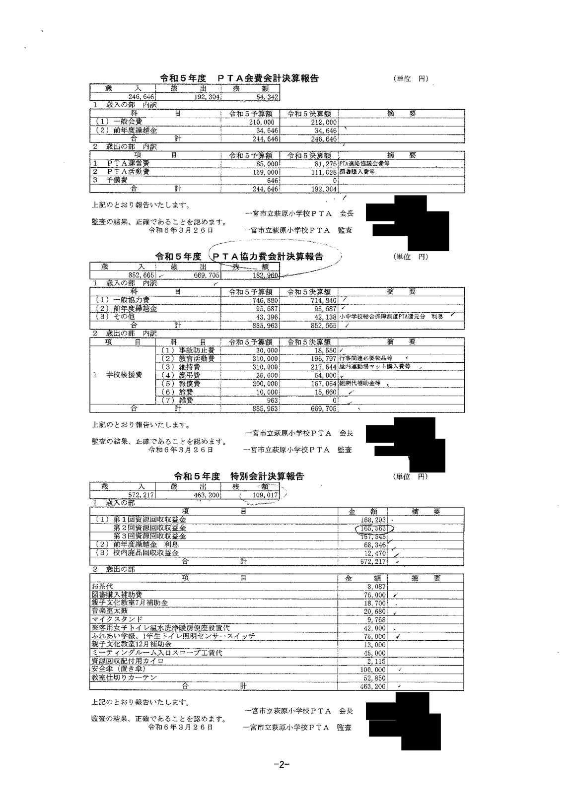
PTA（支出者）／校長（工事を受け入れた施設管理者）／一宮市教育委員会（設置者・負担義務者）
PTA資金による市有校舎の設備工事。工事の成果物は校舎に付合し、市の財産になる。
市が負担すべき建物の維持・修繕費を、保護者の拠出金で賄わせた（負担の転嫁）。
問題点
- 温水洗浄暖房便座の設置、トイレ照明センサースイッチの設置、出入口スロープの工事は、いずれも校舎（建物）に取り付ける工事で、「建物の維持及び修繕」に当たる可能性が高い。
- PTAの特別会計（資源回収益）は当該任意団体の私的資金であり、市の公金と同一視することはできない。これを市の建物工事に充てることは、市が負担すべき経費を保護者に転嫁した状態にあたる。
- PTAの会計事務は業務委任契約で校長が受任しており、支出を実行したのは校長（学校）側である可能性がある。この場合、工事を必要とした者と、PTA資金を支出した者が同じになり、「PTAの自発的な寄附」と評価する余地が小さくなる。
- 工事の発注者・契約当事者、市の寄附受納手続、財産台帳への登載の有無が決算書からはわからない。手続を欠いていれば、市の財産管理上の問題も生じる。
- 令和7年度の業務委任契約により、校長がPTAから「会費の集金及び督促」「印鑑、出納簿及び預貯金通帳等の保管・管理」「経理事務」を無報酬で受任している。
法令・規約への該当性
- 疑い：強地方財政法27条の4・同法施行令52条2号 市立小中学校の「建物の維持及び修繕に要する経費」は、市が住民に直接・間接に負担を転嫁してはならない。便座・照明スイッチ・スロープは建物の附属設備・建物そのものへの工事であり、典型例に近い。
- 疑い：強学校教育法5条 学校の経費は、法令に特別の定めがある場合を除き、設置者（一宮市）が負担する。
- 参考文部科学省 平成24年5月9日 初等中等教育局長通知 学校の管理運営経費は設置者が負担すべきもの。学校の会計は学校関係団体の会計と明確に区分して処理する。
想定される反論と評価
市は「PTAの自発的な寄附であり、転嫁ではない」と反論することが想定される。しかし、①会計を校長が管理している、②工事の必要性を判断したのは学校である、③PTAの総会資料では支出が事後報告にとどまる、という事情があれば、自発性の主張は弱い。名古屋市は同じ条文を根拠に、建物の維持・修繕に関わる寄附自体を受けない運用をしている。
請求・確認すべき資料
- 一宮市への公文書開示請求：当該工事に関する寄附申込書・受納決定書・財産台帳（附属設備）の記載
- PTAへの請求：特別会計の支出伺い・領収書・見積書（発注者名義の確認）
- 市教委への照会：当該工事を公費で行わなかった理由
重要度ANo.2① 建物の維持・修繕費の負担
萩原小R6年度決算
特別会計から「中舎3階網戸取付費用」187,000円。協力費会計の維持費385,865円（予算320,000円の121%）の摘要にも「学校ボランティア必要経費・中舎3階網戸取付…」とあり、同じ工事を二つの会計で計上している可能性がある。

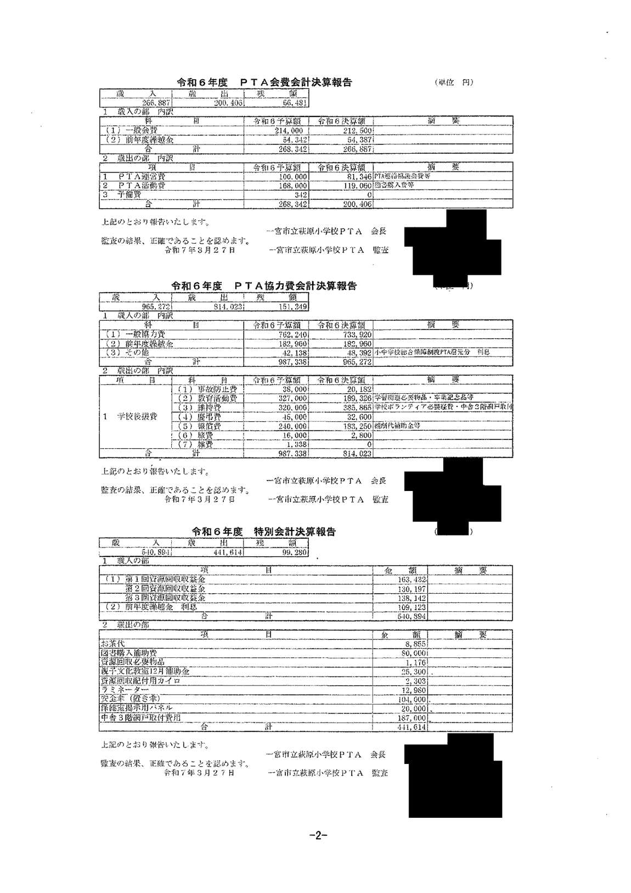
PTA／校長（経理事務の受任者）／一宮市教育委員会
市有校舎への網戸取付工事費をPTAの二つの会計から支出。
建物の維持・修繕費の負担転嫁、及び同一工事の重複計上の疑い。
問題点
- 網戸は窓枠に取り付ける建具で、校舎の附属設備にあたる。取付工事は「建物の維持及び修繕」に該当する可能性が高い。
- 特別会計の「中舎3階網戸取付費用」187,000円に加え、協力費会計の維持費385,865円（予算の121%）の摘要にも「中舎3階網戸取付」とある。同じ工事を二つの会計で別々に払ったのか、一つの工事を二つの会計で分け合ったのか、決算書からは判別できない。
- 分担であれば、どちらの会計からいくら出たのかを総会で示すべきで、示していない。二重払いであれば、会計の誤りであり、返金を受けるべきである。
- 協力費会計の維持費は、予算320,000円を65,865円超えている。超過分が網戸工事による可能性がある。
- 令和7年度の業務委任契約により、校長がPTAから「会費の集金及び督促」「印鑑、出納簿及び預貯金通帳等の保管・管理」「経理事務」を無報酬で受任している。
法令・規約への該当性
- 疑い：強地方財政法27条の4・同法施行令52条2号 市立小中学校の「建物の維持及び修繕に要する経費」は、市が住民に直接・間接に負担を転嫁してはならない。
- 疑い：強学校教育法5条 学校の経費は、法令に特別の定めがある場合を除き、設置者（一宮市）が負担する。
- 疑い：中当該PTAの規約 萩原小規約は会計に「一切の収入支出を正確に記録」することを求めている。同一工事の計上先が不明確なのは、この定めに反するおそれがある。
想定される反論と評価
「維持費の摘要は年度内の複数の支出をまとめた表記にすぎない」との説明が想定される。その場合でも、網戸工事の総額と各会計の負担額を示す必要がある。
請求・確認すべき資料
- PTAへの請求：網戸工事の見積書・請求書・領収書（2会計分）
- 一宮市への開示請求：網戸の寄附受納の記録
重要度BNo.3③ 協力費・寄附金の集め方
萩原小R5・R6年度決算
「PTA協力費会計」の支出は全額が款「学校後援費」（669,705円／814,023円）。協力費（714,840円／733,920円）は会費（212,000円／212,500円）の約3.4倍。集金文書では協力費を「1口月額40円」とし、口数申込書を担任に提出させている。

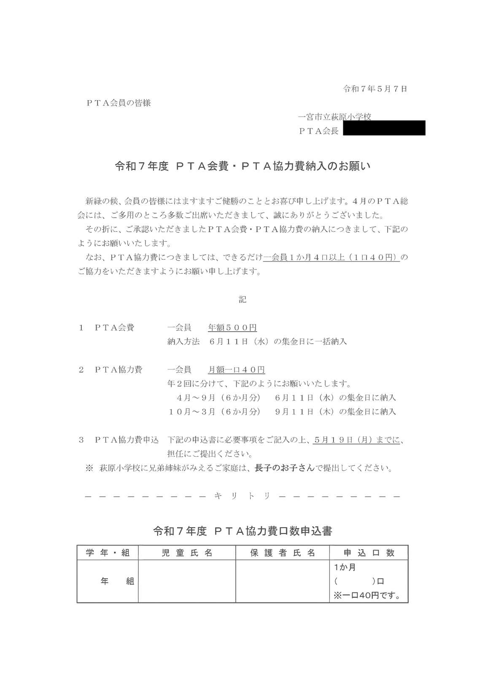
PTA（徴収主体）／校長・担任（集金・申込書の回収）／一宮市
PTA規約に定められた「協力費」。名目は協力費だが、規約上の負担金である。
学校経費に充てる資金を、学校が関与する形で保護者から一律的に集めている。
問題点
- 萩原小規約第17条は「協力費は、一会員月額一口40円とする。ただし、事情により減免す…」と定めており、協力費は任意の寄付ではなく、規約に基づく会費の一種として扱われている。
- 協力費会計の支出は全額が款「学校後援費」（R6：814,023円）で、教育活動費「学習関連必要物品・卒業記念品等」、維持費「中舎3階網戸取付」、報償費「観劇代補助金等」など、学校の教育活動・施設に使われている。
- 集金文書は協力費の口数申込書を「担任に提出」させ、業務委任契約で校長が集金・督促を受任している。市の職員が、市の経費に充てる資金を保護者から集めていることになる。
- 協力費の額（R6：733,920円）は会費（212,500円）の約3.4倍。会費より協力費が主たる財源になっている。
- 令和7年度の業務委任契約により、校長がPTAから「会費の集金及び督促」「印鑑、出納簿及び預貯金通帳等の保管・管理」「経理事務」を無報酬で受任している。
法令・規約への該当性
- 疑い：強地方財政法4条の5 市は住民に対し、直接・間接を問わず寄附金を割り当てて強制的に徴収（これに相当する行為を含む）してはならない。規約で額が決まり、担任が申込書を回収し、校長が督促まで受任している点が「割り当てて強制的に徴収（これに相当する行為を含む）」に近い。
- 疑い：強学校教育法5条 学校の経費は、法令に特別の定めがある場合を除き、設置者（一宮市）が負担する。
- 疑い：中地方公務員法35条 担任・校長が勤務時間中に協力費の申込書回収・集金・督促を行っていれば、職務専念義務との関係が問題になる。
- 参考文部科学省 平成24年5月9日 初等中等教育局長通知 学校の管理運営経費は設置者が負担すべきもの。学校の会計は学校関係団体の会計と明確に区分して処理する。
想定される反論と評価
「協力費はPTAの自主的な判断で集め、学校はPTAの依頼で事務を代行しているにすぎない」との反論が想定される。しかし、規約で金額を決め、担任が回収し、校長が督促する仕組みでは、保護者から見て学校の徴収と区別できない。
請求・確認すべき資料
- 市教委への照会：担任による協力費申込書の回収・校長による督促が、どの法令上の権限に基づく職務か
- PTAへの請求：協力費の減免規定の運用実績、未納者への督促の記録
重要度ANo.4① 建物の維持・修繕費の負担
北方小R6年度決算
決算書の欄外に「北方小バザー会計より 体育館暗幕修繕費 支出175,543円 残高123,722円」とある。バザー会計の決算そのものは開示文書に含まれていない。

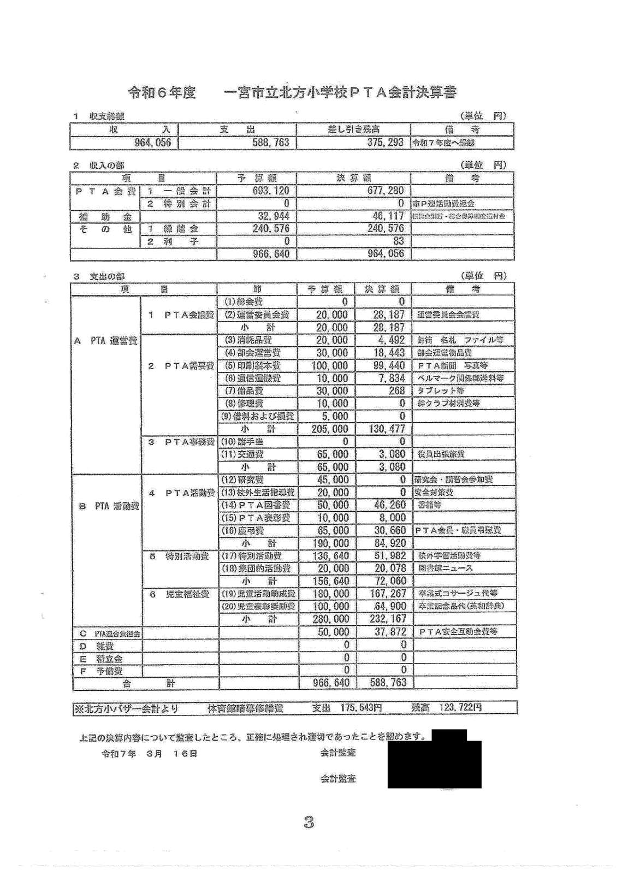
PTA（バザー会計）／校長・教頭（北方小規約は会計2名のうち1名を教頭とする）／一宮市
PTAバザー会計による体育館暗幕の修繕費の負担。
市有施設の修繕費の負担転嫁、及び会計の不開示。
問題点
- 体育館の暗幕は、カーテンレール等とともに建物に附属する設備として扱われることが多い。附属設備であれば、修繕費は「建物の維持及び修繕に要する経費」に当たる。備品扱いであれば学校教育法5条の問題になる。
- バザー会計の決算書は総会資料に含まれておらず、欄外に「支出175,543円 残高123,722円」と注記されているだけである。収入・支出の内訳を会員が確認できない。
- 北方小規約は会計2名のうち1名を教頭とする。教頭が会計としてPTA資金を管理し、その資金で学校施設を修繕する構造になっている。
- 開示文書に業務委任契約書は含まれていない（契約の有無は不明）。
法令・規約への該当性
- 疑い：中〜強地方財政法27条の4・同法施行令52条2号 市立小中学校の「建物の維持及び修繕に要する経費」は、市が住民に直接・間接に負担を転嫁してはならない。暗幕が建物の附属設備として財産台帳に登載されていれば該当する。
- 疑い：強学校教育法5条 学校の経費は、法令に特別の定めがある場合を除き、設置者（一宮市）が負担する。
- 疑い：中当該PTAの規約 北方小規約は会計に「会計事務を処理し、総会に報告する」ことを求めている。バザー会計の決算を総会に示していないのは、この定めに反するおそれがある。
想定される反論と評価
「暗幕は物品であり建物ではない」との反論が想定される。その場合でも、市が設置した物品の修繕費は学校教育法5条により市が負担するのが原則である。
請求・確認すべき資料
- PTAへの請求：バザー会計の決算書・通帳・修繕業者の請求書
- 一宮市への開示請求：体育館暗幕の財産区分（建物附属設備か備品か）
重要度BNo.5② 学校が負担すべき経費の肩代わり
北方小R5年度決算
PTA需要費の備品費が195,802円（予算50,000円の392%）。摘要は「タブレット・カーテン等」。

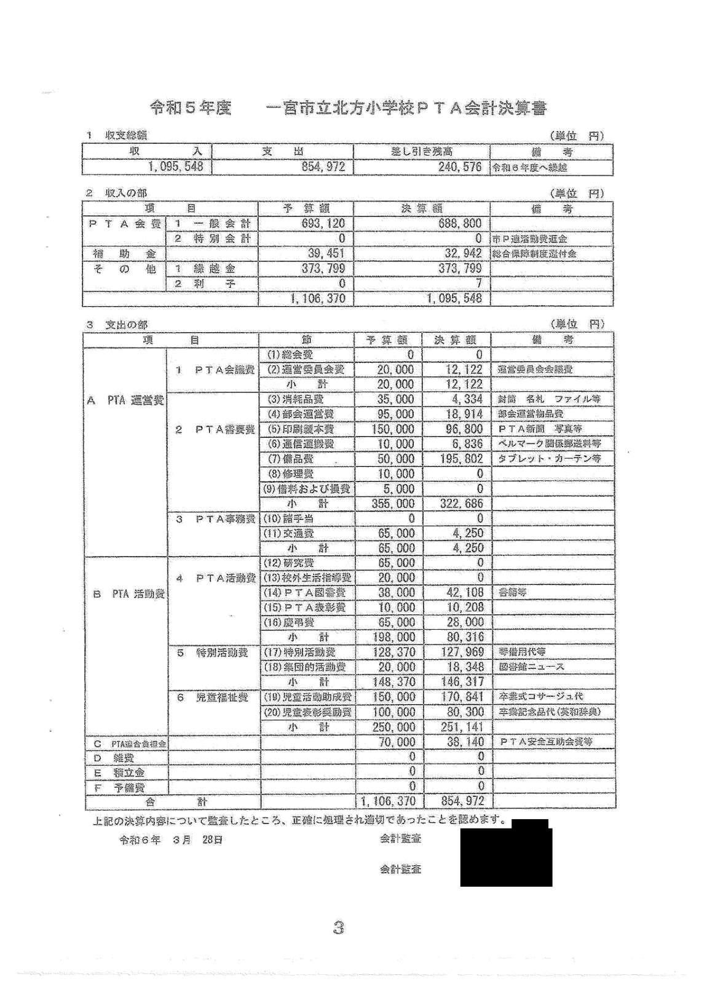
PTA／教頭（会計）／一宮市
PTA会費によるタブレット・カーテン等の購入。
学校の備品の購入費をPTAが負担。予算の大幅超過。
問題点
- 備品費の予算50,000円に対し決算195,802円（392%）。予算の約4倍の支出が、総会の承認なしに行われている。
- 摘要は「タブレット・カーテン等」。タブレットやカーテンが学校で使うものであれば、本来は市が備品として整備すべきものである。
- 購入物品がPTAの所有物として管理されているのか、市に寄附されたのかが不明。寄附であれば市の受納手続が必要になる。
- 開示文書に業務委任契約書は含まれていない（契約の有無は不明）。
法令・規約への該当性
- 疑い：中学校教育法5条 学校の経費は、法令に特別の定めがある場合を除き、設置者（一宮市）が負担する。使用目的が学校の教育活動であれば該当する。
- 疑い：中当該PTAの規約 総会で決めた予算を4倍近く超えている。北方小規約に流用規定があるかは開示文書から確認できない。
想定される反論と評価
「PTA活動用のタブレットである」との説明が想定される。その場合は使用目的・保管場所・管理者を確認する必要がある。
請求・確認すべき資料
- PTAへの請求：購入物品の明細・保管場所・使用者
- 一宮市への開示請求：寄附受納の記録
重要度ANo.6② 学校が負担すべき経費の肩代わり
南部中R5・R6年度決算
款B「学校後援活動費」が3,679,207円（歳出の71%）／2,968,206円（70%）。内訳は選手派遣費2,002,453円／1,530,822円、生徒厚生費1,010,038円／774,862円、借損費291,910円／248,714円、環境整備費104,118円／142,531円など。どの費目にも摘要がない。

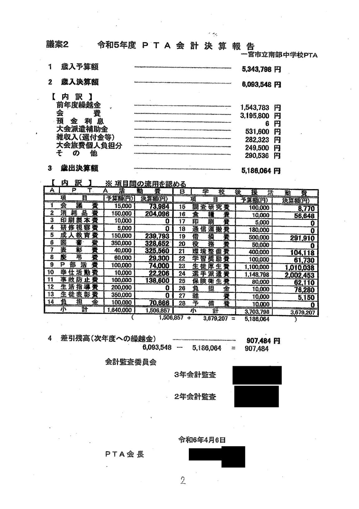

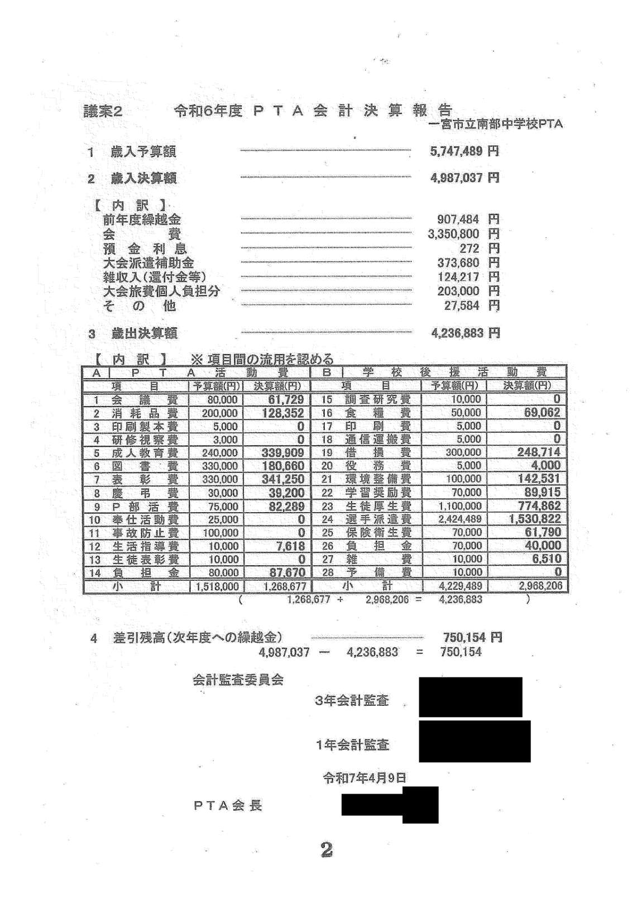
PTA／校長（経理事務の受任者）／一宮市
PTA会計の歳出の約7割が款「学校後援活動費」。
学校の教育活動費・部活動の大会派遣費・施設関係費を保護者の会費で賄っている。
問題点
- 学校後援活動費はR5：3,679,207円（歳出5,186,064円の71%）、R6：2,968,206円（同4,236,883円の70%）。PTAの会計というより、学校の第二の予算として機能している。
- 選手派遣費（R5：2,002,453円、予算1,148,798円の174%）、生徒厚生費（R5：1,010,038円）、借損費（R5：291,910円）、環境整備費（R5：104,118円）、調査研究費・学習奨励費・保険衛生費など、学校の教育活動・管理運営に係る費目が並ぶ。
- どの費目にも摘要（何に使ったか）が書かれていない。会員は使途を確認できない。
- 環境整備費の中に校舎の修繕が含まれていれば、地方財政法27条の4の問題になる。
- 令和7年度の業務委任契約により、校長がPTAから「会費の集金及び督促」「印鑑、出納簿及び預貯金通帳等の保管・管理」「経理事務」を無報酬で受任している。校長が経理事務を行い、その会計の7割を学校のために使っている。資金の管理者と受益者が同じである。
法令・規約への該当性
- 疑い：強学校教育法5条 学校の経費は、法令に特別の定めがある場合を除き、設置者（一宮市）が負担する。
- 要確認地方財政法27条の4・同法施行令52条2号 環境整備費の内訳次第。
- 参考文部科学省 平成24年5月9日 初等中等教育局長通知 学校の管理運営経費は設置者が負担すべきもの。学校の会計は学校関係団体の会計と明確に区分して処理する。
- 疑い：中地方自治法235条の4第2項 校長が公務としてPTAの現金・通帳を学校で保管していれば、法令上の根拠のない保管にあたるおそれがある。
想定される反論と評価
「部活動の大会派遣は教育課程外であり、保護者負担も許される」との反論が想定される。部活動の位置付けにかかわらず、市の予算で措置すべき経費を会費で一律に賄うことの是非は問われる。
請求・確認すべき資料
- PTAへの請求：費目別の支出明細・証憑
- 市教委への照会：部活動の大会派遣費・体育祭等の借損費の公費負担の基準
重要度ANo.7⑤ 計数誤り・決算表示の不備
南部中R5・R6年度決算
収入に「大会旅費個人負担分」249,500円／203,000円、「大会派遣補助金」531,600円／373,680円がある。生徒個人の負担金と外部補助金がPTA会計を通って選手派遣費として支出されている。
PTA／校長（経理事務）／生徒・保護者（個人負担者）
生徒個人の大会旅費負担金と外部補助金を、PTA会計の収入として処理している。
学校が扱うべき（又は保護者に直接帰属すべき）金を、PTA会計に混在させている。
問題点
- 収入に「大会旅費個人負担分」（R5：249,500円、R6：203,000円）がある。これは大会に出た生徒の保護者が個別に負担した金で、PTA会員全体の財産ではない。
- 「大会派遣補助金」（R5：531,600円、R6：373,680円）は、大会主催者や上部団体から学校（又は選手）に交付される性質の金である可能性がある。
- これらをPTA会計に入れることで、PTAの決算規模が膨らみ、会費の使途と個人負担金の使途が区別できなくなっている。
- PTAの経理は業務委任契約で校長が行っている。学校が扱う金（学校徴収金）とPTAの金の区分が、事実上なくなっている。
法令・規約への該当性
- 疑い：強文部科学省 平成24年5月9日 初等中等教育局長通知 学校の管理運営経費は設置者が負担すべきもの。学校の会計は学校関係団体の会計と明確に区分して処理する。学校が扱う金とPTA会計の区分が求められている。
- 疑い：中地方自治法235条の4第2項 市の所有に属しない現金・有価証券は、法律又は政令の規定によらなければ保管できない。個人負担分を学校が集めて保管していれば問題になる。
- 疑い：中当該PTAの規約 PTAの経費は会費等でまかなうのが規約の建前で、会員以外の個人負担金を受け入れる根拠が規約にあるか不明。
想定される反論と評価
「選手の旅費をまとめて支払うための便宜的な処理」との説明が想定される。便宜であっても、総会資料ではPTAの収入として承認されており、会員の財産と混同されている。
請求・確認すべき資料
- PTAへの請求：個人負担分の徴収名義・徴収方法・対象生徒数
- 市教委への照会：大会派遣補助金の交付先
重要度CNo.8⑦ 予算統制・繰越金
南部中R5年度決算
予算を大幅に超えた費目がある：表彰費325,560円（予算40,000円の814%）、負担金76,280円（予算10,000円の763%）、食糧費56,648円（予算10,000円の566%）、会議費73,984円（予算15,000円の493%）、選手派遣費（予算の174%）。
PTA（予算執行者＝会計を受任する校長）
総会で議決した予算と、実際の支出の大きな乖離。
予算統制の不在。
問題点
- R5の表彰費325,560円（予算40,000円の814%）、負担金76,280円（同763%）、食糧費56,648円（同566%）、会議費73,984円（同493%）、選手派遣費2,002,453円（同174%）。
- 「項目間の流用を認める」とあるが、予算の8倍を超える執行は、流用の範囲を超え、予算を総会で議決する意味を失わせる。
- 歳入決算（6,093,548円）が歳入予算（5,343,798円）を約75万円上回っており、増えた収入をそのまま使っている。補正予算の手続は記載されていない。
法令・規約への該当性
- 疑い：中当該PTAの規約 南部中規約は予算・決算を総会の議決事項としている。予算と著しく異なる執行は、総会の議決権を実質的に損なう。
想定される反論と評価
「流用条項で処理済み」との説明が想定される。流用の決裁記録（誰がいつ認めたか）の提示を求めるべき。
請求・確認すべき資料
- PTAへの請求：流用の決裁記録、役員会議事録
重要度CNo.9⑥ 監査・内部統制
南部中R5・R6年度決算
監査欄に監査意見の文言がなく、「会計監査委員会」と署名だけがある。日付はR6.4.6／R7.4.9。
PTA会計監査委員会
決算への監査意見の欠如。
監査の形式的実施。
問題点
- 決算報告の末尾に「会計監査委員会」と監査人の署名欄があるだけで、「適正と認める」等の監査意見の文言がない。
- 監査の日付はR6.4.6／R7.4.9。PTA会長の署名も同じ日付で、監査と決算承認が同日に行われたと見られる。
- どの費目にも摘要がないため、監査人がどの証憑を確認したのかも推測できない。
法令・規約への該当性
- 疑い：中当該PTAの規約 南部中規約は会計監査委員会が会計を監査し、その結果を報告することを定めている。意見のない署名だけでは、監査結果の報告と言えない。
請求・確認すべき資料
- PTAへの請求：監査報告書の原本、監査時に確認した帳簿・証憑の一覧
重要度BNo.10③ 協力費・寄附金の集め方
北部中R5・R6年度決算
PTA会費の代わりに「PTA協力費」（1口月額200円、1世帯1口以上）を徴収（R6は653口＋教職員41名）。支出のうち款「学校後援費」が1,034,126円（58%）／1,033,508円（60%）。内訳は研究調査費「研修・教育図書・進路指導補助等」、渉外費「来客用お茶代等・交通費」、環境整備費309,908円／384,591円「備品材料代・花苗・培養土等」、報償費「卒業記念品・部活動備品・消耗品等」。

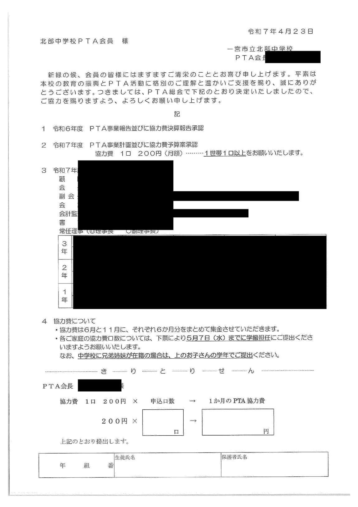

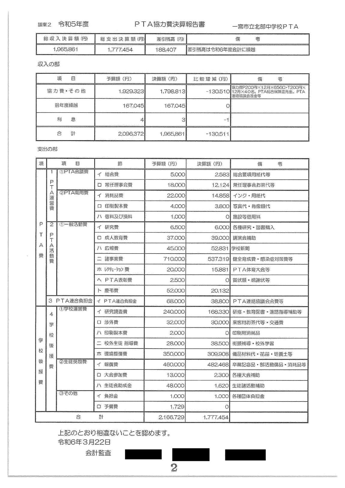
PTA（徴収主体）／一宮市
PTA会則で「協力費」を唯一の財源とし、学校施設の改善と教師の研究援助を事業に掲げる団体の会計。
学校の経費に充てる資金を「協力費」の名目で全世帯から集めている。
問題点
- 北部中PTA会則第4条は、事業として「学校の施設改善」「教師の研究援助」を明記している。第11条は「本会の経費は、協力費及びその他の収入をもって支弁する」とする。PTAの目的そのものに、市が負担すべき施設改善と教員研修の援助が含まれている。
- 協力費は「1口200円（月額）、1世帯1口以上」。会費という名称を使わずに、事実上の会費を集めている。
- 支出の約6割が款「学校後援費」（R5：1,034,126円、R6：1,033,508円）。研究調査費「研修・教育図書・進路指導補助等」、渉外費「来客用お茶代等・交通費」、校外生徒指導費「街頭補導・校外学習」、環境整備費「備品材料代・花苗・培養土等」、報償費「卒業記念品・部活動備品・消耗品等」。
- 来客用のお茶代は学校の接遇費、進路指導補助や校外学習は学校の教育活動費で、いずれも市の経費である。
- 開示文書に業務委任契約書は含まれていない（契約の有無は不明）。
法令・規約への該当性
- 疑い：強学校教育法5条 学校の経費は、法令に特別の定めがある場合を除き、設置者（一宮市）が負担する。
- 疑い：中地方財政法4条の5 市は住民に対し、直接・間接を問わず寄附金を割り当てて強制的に徴収（これに相当する行為を含む）してはならない。「1世帯1口以上」の設定が割当てに近い。学校の関与の程度は要確認。
- 要確認地方財政法27条の4・同法施行令52条2号 環境整備費の内容次第。
- 参考文部科学省 平成24年5月9日 初等中等教育局長通知 学校の管理運営経費は設置者が負担すべきもの。学校の会計は学校関係団体の会計と明確に区分して処理する。
想定される反論と評価
「会則に基づくPTAの自主事業」との反論が想定される。しかし、市が負担すべき経費をPTAの事業として定めても、市の負担義務は消えない。
請求・確認すべき資料
- 市教委への照会：北部中の研修・教育図書・進路指導・来客接遇の公費予算額と、PTA負担額の関係
- PTAへの請求：学校後援費の明細と証憑
重要度BNo.11④ 学校の会計・個人負担金との混在
北部中R5・R6年度決算
「生徒活動費決算報告書」は「一宮市立北部中学校」の名義（生徒1人月150円、1,294,400円／1,120,400円）なのに、PTA総会の議案2として報告・承認されている。支出には「体育祭テント・スピーカー」の借料322,000円／287,900円、部活動用品、大会選手輸送費などがある。

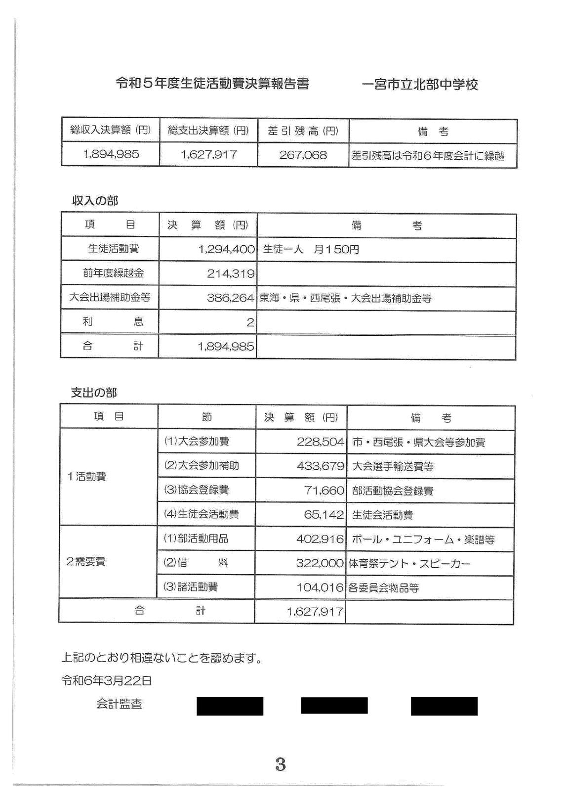
一宮市立北部中学校（名義人）／PTA総会（承認機関とされている）
学校名義で生徒から集める「生徒活動費」の決算。学校徴収金（いわゆる私費会計）の性質を持つ。
学校の私費会計を、PTA総会の議案として報告・承認させている。
問題点
- 決算書の名義は「一宮市立北部中学校」で、PTAではない。生徒1人月150円を集め、部活動の大会参加費・選手輸送費・協会登録費・生徒会活動費・部活動用品・体育祭のテントやスピーカーの借料・各委員会の物品に支出している。
- 学校が集める金の決算を、私的団体であるPTAの総会が承認する法的根拠はない。PTA総会の承認は、学校の会計責任を免除する効果を持たない。
- 体育祭のテント・スピーカーの借料（R5：322,000円、R6：287,900円）は学校行事の運営費であり、市が負担すべき経費の可能性が高い。
- 学校が「市の所有に属しない現金」を保管することには法令上の根拠が必要である。
法令・規約への該当性
- 疑い：中〜強地方自治法235条の4第2項 市の所有に属しない現金・有価証券は、法律又は政令の規定によらなければ保管できない。学校名義で生徒から集めた金を学校が保管していれば該当し得る。
- 疑い：強学校教育法5条 体育祭の借料・各委員会物品は学校の管理運営経費である。
- 疑い：強文部科学省 平成24年5月9日 初等中等教育局長通知 学校の会計はPTAの会計と明確に区分するよう求めている。PTA総会で学校の会計を承認させるのは、区分と逆の運用である。
想定される反論と評価
「保護者に説明する場としてPTA総会を使っているだけ」との説明が想定される。説明であれば「承認」の議案にする必要はない。
請求・確認すべき資料
- 一宮市への開示請求：生徒活動費の徴収根拠（市の要綱等）、口座名義、管理者
- 市教委への照会：学校徴収金の決算をPTA総会で承認させる運用の可否
重要度BNo.12④ 学校の会計・個人負担金との混在
奥小R5・R6年度決算
資源回収収益金の決算書の名義が「一宮市立奥小学校」になっている（PTA名義ではない）。支出には「児童搬送タクシー運賃等」、「野外教育活動補助、用紙等」242,254円、「プール関係設備、自在ほうき等」32,325円がある。

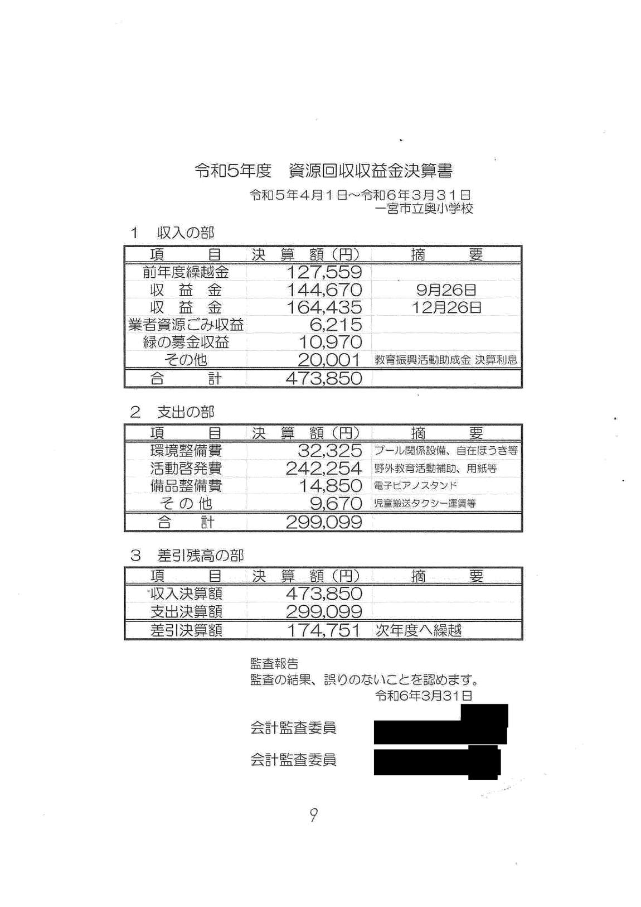
一宮市立奥小学校（名義人）／PTA（資源回収の実施者）
PTAが行う資源回収の収益金の決算が、学校名義になっている。
PTAの資金を学校が自らの名義で管理・支出している。
問題点
- 資源回収はPTAの事業であり、収益金はPTA（会員）の財産である。ところが決算書の名義は「一宮市立奥小学校」になっている。
- 支出には「児童搬送タクシー運賃等」「野外教育活動補助、用紙等」（R5：242,254円）、「プール関係設備、自在ほうき等」（R5：32,325円）、「ラミネーター機器、ソフトペン等」（R6：64,306円）、「いのちの授業講師手土産等」がある。いずれも学校の教育活動・施設に関する経費である。
- 収入に「緑の募金収益」（R5：10,970円、R6：24,090円）が含まれている。緑の募金は緑化推進のための募金であり、その「収益」が学校名義の会計に入っている理由が不明。
- 「教育振興活動助成金」（R5、その他20,001円に含む）の交付先も不明。
- 令和7年度の業務委任契約により、校長がPTAから「PTA会費の徴収事務」「印鑑、出納簿及び預金通帳の保管」を無報酬で受任している。
法令・規約への該当性
- 疑い：強地方自治法235条の4第2項 市の所有に属しない現金・有価証券は、法律又は政令の規定によらなければ保管できない。学校名義で保管していれば、市の所有に属しない現金を法令の根拠なく保管していることになる。
- 疑い：強学校教育法5条 学校の経費は、法令に特別の定めがある場合を除き、設置者（一宮市）が負担する。
- 要確認地方財政法27条の4・同法施行令52条2号 プール関係設備が建物附属設備であれば該当。
- 疑い：強文部科学省 平成24年5月9日 初等中等教育局長通知 学校の管理運営経費は設置者が負担すべきもの。学校の会計は学校関係団体の会計と明確に区分して処理する。
想定される反論と評価
「名義は便宜上の表記」との説明が想定される。口座名義・印鑑の保管者を確認すべき。
請求・確認すべき資料
- PTA・学校への請求：資源回収金の口座名義・通帳の保管者
- 緑の募金の取扱い（募金の何割を学校に残す仕組みか）の確認
重要度CNo.13⑤ 計数誤り・決算表示の不備
奥小R6年度決算
収支総計の部の支出総額1,101,840円と、支出内訳の合計1,103,744円が1,904円合わない。予算総額も、総計の部1,776,410円と内訳1,835,330円（前年度の数字のまま）で食い違う。差引残額790,948円は総計の部の数字から計算されている。

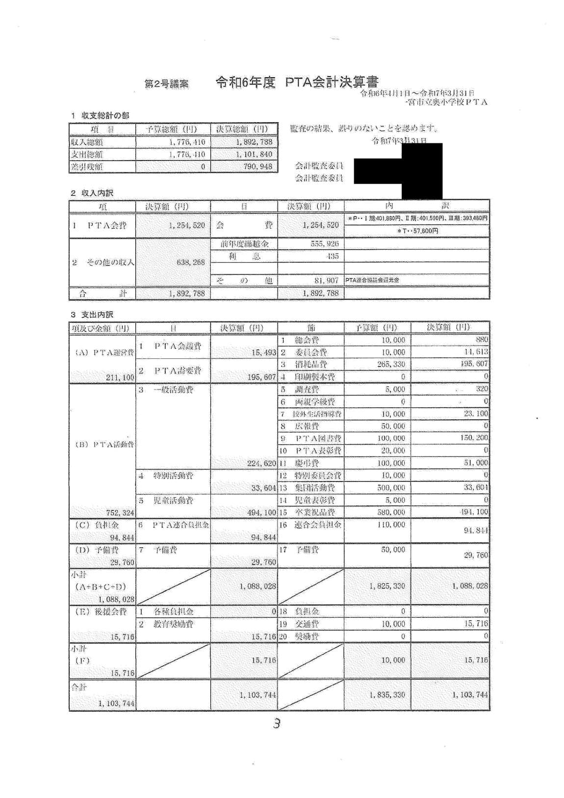
PTA会計（徴収事務・通帳保管を校長が受任）／会計監査委員2名
総会で承認された決算書の計数誤り。
決算書の作成・監査の誤り。
問題点
- R6の「収支総計の部」の支出総額は1,101,840円、「支出内訳」の合計は1,103,744円で、1,904円合わない。
- 差引残額790,948円は、収入総額1,892,788円－支出総額1,101,840円で計算されている。支出内訳が正しければ、正しい残額は789,044円で、繰越金が1,904円過大に表示されている。
- 予算総額は、収支総計の部1,776,410円に対し、支出内訳の予算合計1,835,330円（前年度の数字のまま）で、58,920円の差がある。
- 監査委員2名が「誤りのないことを認めます」と署名している。計数の誤りを見落としている。
法令・規約への該当性
- 疑い：中当該PTAの規約 奥小規約は定例総会で決算・会計の承認をすると定める（総会要項p10）。誤った決算が承認されている。
請求・確認すべき資料
- PTAへの請求：R6年度末の通帳残高（正しい繰越額の確認）、訂正決算の総会報告
重要度BNo.14② 学校が負担すべき経費の肩代わり
奥小R5・R6年度決算
卒業祝品費586,620円／494,100円（会費の38%／39%）。款「後援会費」の交通費は2年続けて予算を超過。

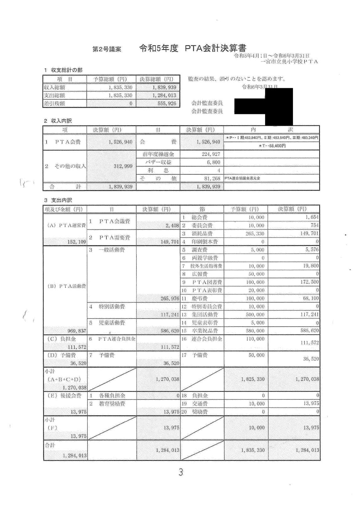
PTA
PTA会費による卒業記念品の購入。
会費の約4割を卒業記念品に支出。
問題点
- 卒業祝品費はR5：586,620円、R6：494,100円で、会費（R5：1,526,940円）の約38%を占める。
- PTAの会員でない保護者の子どもにも配っているのか、会員の子どもだけなのかが不明。全員に配っていれば、会員の会費で非会員の子どもに利益を与えていることになる。逆に会員の子どもだけであれば、学校行事の中で子どもを区別することになる。
- 款「後援会費」の交通費（R5：13,975円、R6：15,716円）は2年続けて予算10,000円を超えている。何の交通費か記載がない。
法令・規約への該当性
- 要確認学校教育法5条 卒業記念品が卒業証書ホルダー等の学校が用いる物品であれば、市の経費の可能性がある。
- 要確認当該PTAの規約 会員と非会員の取扱い。
請求・確認すべき資料
- PTAへの請求：卒業祝品の品目・単価・配布対象
重要度BNo.15⑤ 計数誤り・決算表示の不備
今伊勢小R5・R6年度決算
「PTA会費決算」の収入（219,420円／219,650円）と「PTA協力費決算」の収入（700,200円／694,200円）が、どちらも「一般会計」からの繰入になっている。元になる「一般会計」の決算は開示されていない。R7年度の集金文書は会費を「児童1名につき年額230円」とし、担当者を学校の教頭にしている。

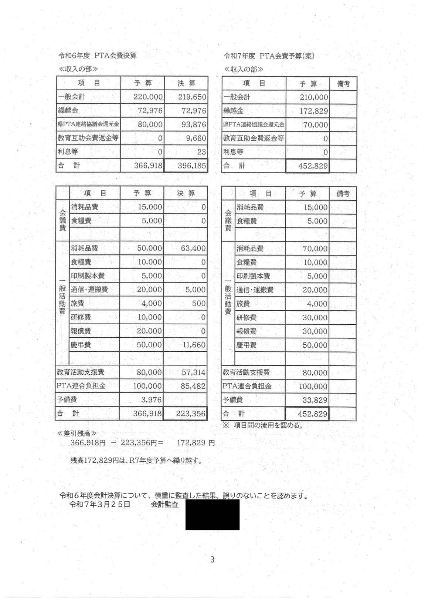

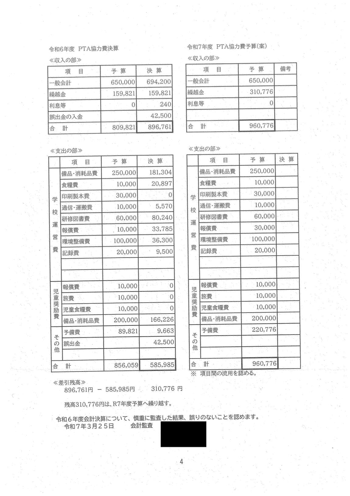

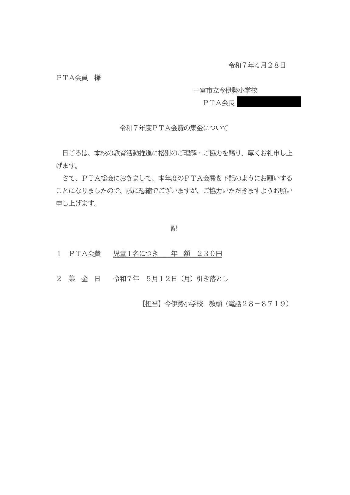
PTA（会計）／校長（経理事務の受任者）／教頭（集金の担当者）
開示された「PTA会費決算」「PTA協力費決算」の上位に、開示されていない「一般会計」が存在する。
PTA資金の全体像を総会資料で示していない。
問題点
- PTA会費決算の収入は「一般会計」219,650円、協力費決算の収入は「一般会計」694,200円（いずれもR6）。どちらも「一般会計」から繰り入れた形になっている。
- では「一般会計」とは何か。会費（児童1名につき年額230円）と協力費を集めた口座と考えられるが、その決算（収入総額・集金額・未納額・残高）は総会資料にない。
- 今伊勢小規約第6条はPTAの経費を「会費、寄付金およびその他の収入」とし、第7条は会費を年額230円と定める。協力費は規約上の根拠が明示されていない。協力費が「寄付金」であれば、任意であることを保護者に示す必要がある。
- R7年度の集金文書の担当者は「今伊勢小学校 教頭」で、集金は口座引き落とし。学校の教頭が、PTA会費と協力費の集金窓口になっている。
- 令和7年度の業務委任契約により、校長がPTAから「会費の集金及び督促」「印鑑、出納簿及び預貯金通帳等の保管・管理」「経理事務」を無報酬で受任している。
法令・規約への該当性
- 疑い：中〜強地方財政法4条の5 市は住民に対し、直接・間接を問わず寄附金を割り当てて強制的に徴収（これに相当する行為を含む）してはならない。教頭が窓口となり、協力費を学校経費（款「学校運営費」）に充てている。
- 疑い：中地方公務員法35条 教頭が勤務時間中にPTAの集金窓口を務めている。
- 要確認地方自治法235条の4第2項 「一般会計」の口座名義・管理者次第。
- 疑い：中当該PTAの規約 規約第9条は「この会の経理は、会計監査を経て年1回以上総会に報告し、承認を得る」とする。「一般会計」が総会に報告されていない。
想定される反論と評価
「一般会計は集金用の通過口座にすぎない」との説明が想定される。通過口座であっても、集めた額と各会計への振替額、未納・返金の状況は会員に示すべきである。
請求・確認すべき資料
- PTAへの請求：「一般会計」の通帳・決算
- 市教委への照会：教頭がPTA会費の集金担当となる根拠
重要度BNo.16② 学校が負担すべき経費の肩代わり
今伊勢小R5・R6年度決算
協力費会計の款「学校運営費」：備品・消耗品費283,505円／181,304円、研修図書費60,000円／80,240円、環境整備費149,812円／36,300円、報償費21,327円／33,785円（予算10,000円の338%）。款「児童奨励費」の備品・消耗品費158,500円／166,226円。

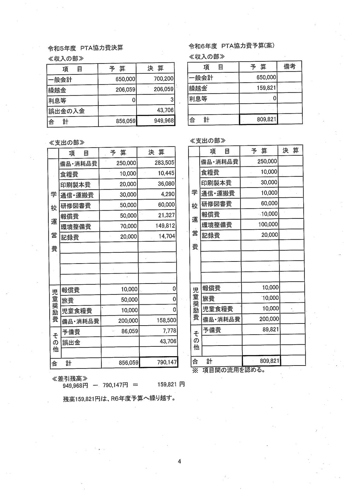
PTA／校長（経理事務）／一宮市
PTA協力費会計の款「学校運営費」「児童奨励費」。
学校の運営費・教育活動費をPTAが負担。
問題点
- 協力費会計の支出は、款「学校運営費」として備品・消耗品費283,505円、研修図書費60,000円、環境整備費149,812円（予算70,000円の214%）、印刷製本費36,080円、記録費14,704円、報償費21,327円（R5）。款「児童奨励費」の備品・消耗品費158,500円。
- 款の名称自体が「学校運営費」であり、学校の運営費をPTAが負担していることを自ら示している。
- 「研修図書費」は教員の研修図書と見られ、教員研修の費用を保護者が負担していることになる。
- R6も研修図書費80,240円（予算60,000円超）、報償費33,785円（予算10,000円の338%）と、予算超過が続く。
- 令和7年度の業務委任契約により、校長がPTAから「会費の集金及び督促」「印鑑、出納簿及び預貯金通帳等の保管・管理」「経理事務」を無報酬で受任している。
法令・規約への該当性
- 疑い：強学校教育法5条 学校の経費は、法令に特別の定めがある場合を除き、設置者（一宮市）が負担する。
- 要確認地方財政法27条の4・同法施行令52条2号 環境整備費の内容次第。
- 参考文部科学省 平成24年5月9日 初等中等教育局長通知 学校の管理運営経費は設置者が負担すべきもの。学校の会計は学校関係団体の会計と明確に区分して処理する。
想定される反論と評価
「PTAが学校を支援するのは当然」との反論が想定される。支援の是非ではなく、市が負担すべき経費を保護者に回していることが問題である。
請求・確認すべき資料
- PTAへの請求：学校運営費の明細・証憑・購入物品の所在
- 一宮市への開示請求：同期間の今伊勢小の消耗品・備品・研修図書の公費予算と執行額
重要度CNo.17⑥ 監査・内部統制
今伊勢小R5・R6年度決算
協力費会計に「誤出金の入金」と「誤出金」が2年続けて計上されている（43,706円／42,500円）。毎年、誤った支払いが起きていることになる。
PTA会計（経理事務は校長が受任）
協力費会計の「誤出金」と「誤出金の入金」。
誤った支払いの反復。
問題点
- 協力費会計に「誤出金」（支出）と「誤出金の入金」（収入）が、R5：43,706円、R6：42,500円と2年続けて同じ規模で計上されている。
- 誤って払った金が戻ってきたなら、収入・支出の両方に計上する必要はなく、相殺処理で足りる。両建てにすると決算規模が膨らみ、何が起きたのか分からなくなる。
- 毎年4万円台の誤出金が起きる原因が説明されていない。何の支払いを、誰が誤ったのか、決算書から読み取れない。
- 令和7年度の業務委任契約により、校長がPTAから「会費の集金及び督促」「印鑑、出納簿及び預貯金通帳等の保管・管理」「経理事務」を無報酬で受任している。
法令・規約への該当性
- 疑い：中当該PTAの規約 規約第17条は会計に「総会で決定した予算に基づいて、一切の会計事務を処理する」ことを求めている。
請求・確認すべき資料
- PTAへの請求：誤出金の相手先・日付・原因の説明、返金の記録
重要度CNo.18⑤ 計数誤り・決算表示の不備
今伊勢小R6年度決算
協力費決算の支出予算の合計が856,059円になっており、前年度の数字のままと見られる（正しくは809,821円）。会費決算の差引残高の式「366,918円－223,356円＝172,829円」は予算額を引いている（正しくは決算収入396,185円－223,356円）。
PTA会計／会計監査
決算書の計数・計算式の誤り。
決算書の作成・監査の誤り。
問題点
- R6協力費決算の支出予算の合計欄は856,059円で、前年度（R5）の予算合計がそのまま残っている。R6の予算合計は809,821円。
- R6会費決算の差引残高の式は「366,918円－223,356円＝172,829円」。366,918円は予算額で、決算収入396,185円から223,356円を引くと172,829円になる。結果の数字だけ合っており、式が誤っている。
- 監査人は「慎重に監査した結果、誤りのないことを認めます」としているが、これらの誤りを見落としている。
法令・規約への該当性
- 疑い：中当該PTAの規約 規約第9条・第17条（会計監査を経た決算報告）。
請求・確認すべき資料
- PTAへの請求：訂正後の決算書
重要度CNo.19⑥ 監査・内部統制
今伊勢小R5年度決算
令和5年度の会費・協力費・資源回収の決算書に監査報告の記載がない（令和6年度分にはある）。

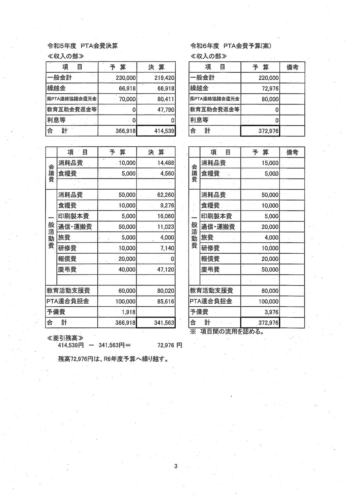
PTA会計監査委員
令和5年度決算への監査報告の欠如。
監査手続の不履行の疑い。
問題点
- R5年度の会費決算・協力費決算・資源回収会計報告のいずれにも監査報告の記載がない（R6分には3/25付で記載がある）。
- 今伊勢小規約第9条は「この会の経理は、会計監査を経て年1回以上総会に報告し、承認を得る」、第17条は会計に「会計監査を経た決算報告」を求め、第20条は「3名の監査委員」を置くとしている。
- R6分の監査欄も署名の黒塗りが1か所で、規約どおり3名が監査したのか確認できない。
法令・規約への該当性
- 疑い：強当該PTAの規約 規約第9条・第17条・第20条に反するおそれ。
請求・確認すべき資料
- PTAへの請求：R5年度の監査報告書、監査委員の人数
重要度BNo.20③ 協力費・寄附金の集め方
貴船小R5・R6年度決算
協力費1,038,856円／1,000,688円が、収入（繰越金を除く）の約8割を占める。正会費は140,088円／135,408円。運営費450,829円（予算の141%）の摘要は「各種行事の諸費用・補助・学校行事や式典運営費、研修旅費、児童入院見舞」。集金文書は「1口26円を基本」とし、「ご家庭にお願いできる口数をお聞き」する方式。

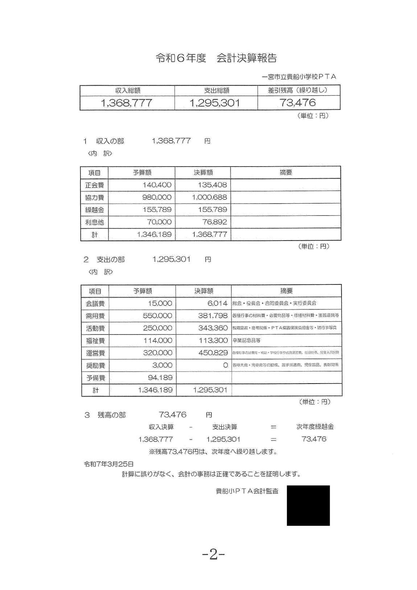

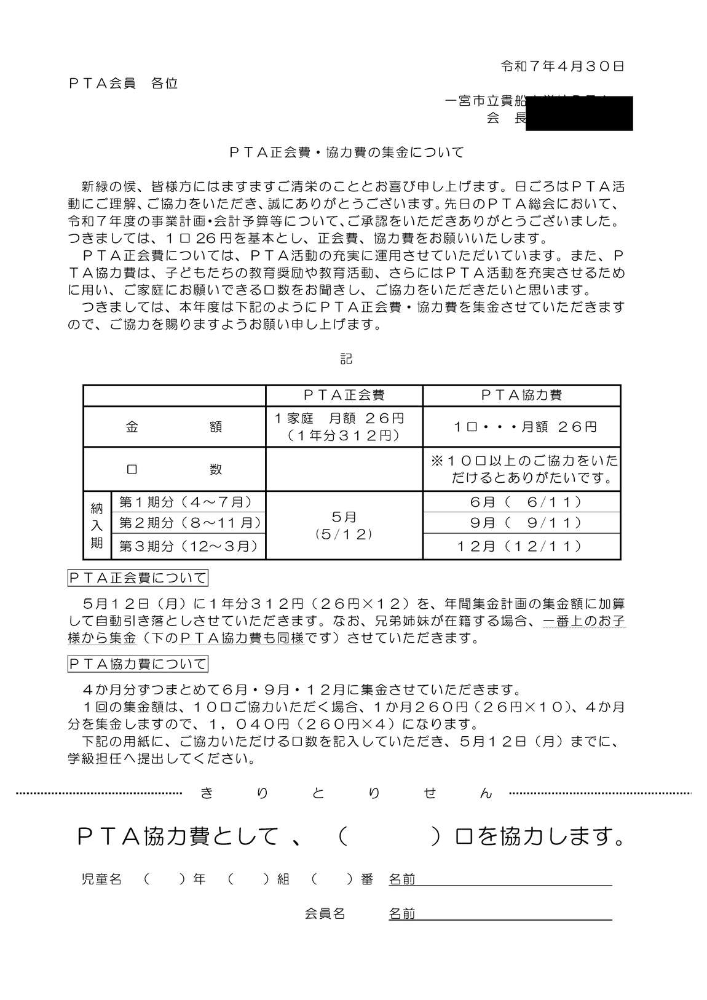
PTA（徴収主体）／校長（徴収事務・通帳保管の受任者）／一宮市
正会費の約7倍の「協力費」を主財源とするPTA会計。
学校行事・式典運営費を協力費で賄う。
問題点
- 収入（繰越金を除く）のうち協力費が約82.5%（R6：1,000,688円／1,212,988円）。正会費は135,408円にすぎない。
- 集金文書は「1口26円を基本とし」「ご家庭にお願いできる口数をお聞きし」と、口数制で協力を求めている。
- 運営費（R6：450,829円、予算の141%）の摘要は「各種行事の諸費用・補助・学校行事や式典運営費、研修旅費、児童入院見舞」。学校行事・式典の運営費と教員等の研修旅費が含まれている。
- 需用費（R5：612,846円）は「各種行事の材料費・必要物品等・修繕材料費・園芸道具等」。「修繕材料費」が校舎の修繕であれば地方財政法27条の4の問題になる。
- 令和7年度の業務委任契約により、校長がPTAから「PTA会費の徴収事務」「印鑑、出納簿及び預金通帳の保管」を無報酬で受任している。
法令・規約への該当性
- 疑い：中〜強地方財政法4条の5 市は住民に対し、直接・間接を問わず寄附金を割り当てて強制的に徴収（これに相当する行為を含む）してはならない。校長が徴収事務を受任し、協力費の主たる使途が学校行事である。
- 疑い：強学校教育法5条 学校の経費は、法令に特別の定めがある場合を除き、設置者（一宮市）が負担する。
- 要確認地方財政法27条の4・同法施行令52条2号 「修繕材料費」の内容次第。
想定される反論と評価
「協力費は任意で、口数も各家庭が決める」との反論が想定される。集金を校長が受任し、学校行事の経費に充てる仕組みでは、任意性の担保方法を確認する必要がある。
請求・確認すべき資料
- PTAへの請求：協力費の口数別の世帯数、運営費・需用費の明細
- 市教委への照会：学校行事・式典運営費の公費予算
重要度BNo.21② 学校が負担すべき経費の肩代わり
宮西小R6年度決算
款「学校運営費」201,951円、「学校設備費」133,613円、「児童教育奨励費」535,624円の合計871,188円が、会費決算1,149,000円の76%にあたる。内訳は各種学校行事等協力費71,699円、研修参加・研究図書費37,988円、学校環境整備費87,449円、備品費227,061円（予算の142%）など。摘要欄はすべて空欄。

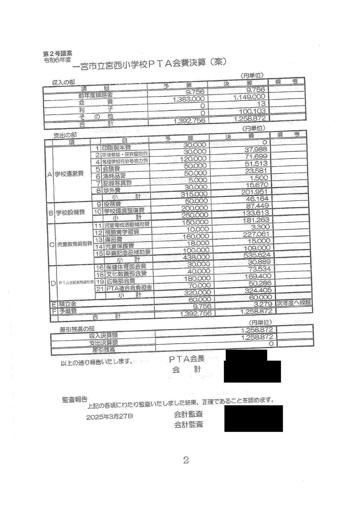
PTA／教頭（規約上、会長の委嘱で会計事務を行う）／校長（経理事務の受任者）／一宮市
PTA会費の約4分の3を学校運営・設備・児童教育に支出。
学校の運営費・設備費・教育活動費をPTAが負担。
問題点
- 款「学校運営費」201,951円、「学校設備費」133,613円、「児童教育奨励費」535,624円の合計871,188円は、会費決算1,149,000円の76%（R6）。款の名称自体が学校の経費であることを示している。
- 各種学校行事等協力費71,699円、研修参加・研究図書費37,988円（教員の研修参加費・研究図書と見られる）、学校環境整備費87,449円、役務費46,164円、備品費227,061円（予算160,000円の142%）。
- 摘要欄はすべて空欄で、何を買い、何に払ったのか分からない。
- 宮西小規約は「会計事務等は、教頭が会長の委嘱を受けて行う」と定め、さらに業務委任契約で校長が経理事務を受任している。学校の管理職がPTA会計を握り、その会費の4分の3を学校の経費に使っている。
法令・規約への該当性
- 疑い：強学校教育法5条 学校の経費は、法令に特別の定めがある場合を除き、設置者（一宮市）が負担する。
- 要確認地方財政法27条の4・同法施行令52条2号 学校環境整備費・役務費の内容次第。
- 疑い：中地方公務員法35条 教頭が勤務時間中にPTAの会計事務を行っていれば問題になる。
- 参考文部科学省 平成24年5月9日 初等中等教育局長通知 学校の管理運営経費は設置者が負担すべきもの。学校の会計は学校関係団体の会計と明確に区分して処理する。
想定される反論と評価
「会員が総会で承認した予算」との反論が想定される。総会の承認があっても、市が負担すべき経費を保護者が負担している状態は変わらない。
請求・確認すべき資料
- PTAへの請求：R6年度の支出明細・証憑
- 市教委への照会：教頭がPTAの会計事務を行うことの職務上の位置付け
重要度CNo.22⑤ 計数誤り・決算表示の不備
宮西小R6年度決算
予備費3,279円を「次年度へ繰越」として支出に計上し、差引残高を0円と表示している。収入の「その他」100,103円は内容が書かれていない。会費は予算1,383,000円に対し決算1,149,000円（234,000円の不足）。
PTA会計
繰越金を支出として計上した決算表示。
決算の実態を隠す表示。
問題点
- 予備費3,279円を「次年度へ繰越」として支出に計上し、差引残高を0円と表示している。繰越金は支出ではない。
- 収入「その他」100,103円の内容が書かれていない。会費以外の収入としては大きい。
- 会費は予算1,383,000円に対し決算1,149,000円で、234,000円（17%）少ない。会員数の減少（任意加入の進展等）を予算に反映していない。
法令・規約への該当性
- 疑い：中当該PTAの規約 決算は実際の残高を示すべきで、0円表示は会員の判断を誤らせる。
請求・確認すべき資料
- PTAへの請求：「その他」収入の内訳、年度末の通帳残高
重要度CNo.23⑥ 監査・内部統制
宮西小R5・R6年度決算
積立金決算の監査報告欄に、同じ年度のPTA会長と同じ氏名だけが書かれている（役職名はなく、他は黒塗り）。会長本人が監査した可能性がある。積立金からの支出「ロールスノコ」110,000円（R5）には摘要がない。

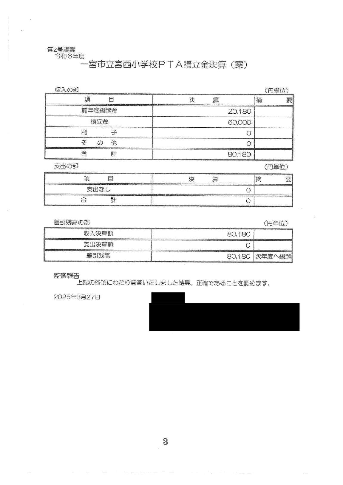

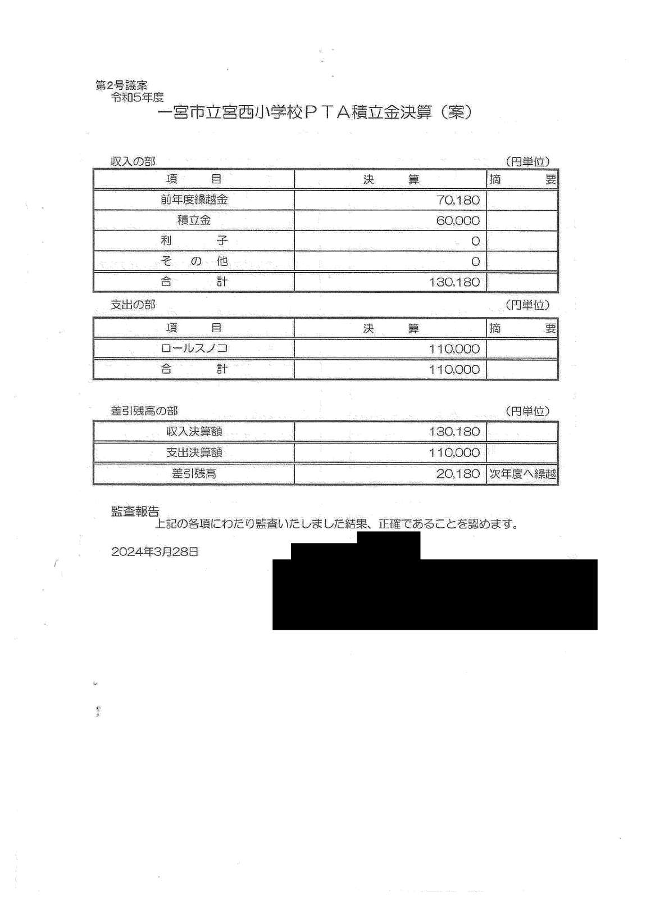
PTA会長／会計監査
積立金決算の監査報告欄に、会長と同一の氏名のみが記載。
会長による自己監査の疑い。
問題点
- R6積立金決算（2025/3/27）の監査報告欄には、同年度の会費決算に「PTA会長」として署名した人物と同じ氏名だけが書かれている（役職名なし。他は市が黒塗り）。
- 会長が自らの在任中の会計を監査することになり、監査の独立性が失われる。宮西小規約は会計監査2名を「幹事の中より選出し、総会で承認」するとしている。
- R5積立金決算（2024/3/28）の監査報告欄にも同じ氏名がある。R5時点の役職は不明。
- 積立金からの支出「ロールスノコ」110,000円（R5）に摘要がない。ロールスノコは学校の床・昇降口等で使う設備と見られる。
法令・規約への該当性
- 疑い：中〜強当該PTAの規約 規約は会計監査を会長とは別に置いている。会長が監査人を兼ねていれば規約の趣旨に反する。
- 要確認学校教育法5条 ロールスノコが学校の設備であれば市の経費。
想定される反論と評価
「会長の氏名は報告者として記載したもので、監査人は黒塗り部分」との説明が想定される。黒塗り部分の役職（監査人の氏名か）を確認する必要がある。
請求・確認すべき資料
- 一宮市への請求：黒塗り部分の記載内容（役職名の有無）の確認
- PTAへの請求：積立金の監査人の氏名・役職
重要度CNo.24⑤ 計数誤り・決算表示の不備
宮西小R5年度決算
令和5年度のPTA会費決算が開示文書に入っていない（積立金決算だけがある）。
該当する画像はありません（開示文書に含まれていない、又は複数校にわたる指摘）。
一宮市（開示の実施機関）／PTA
令和5年度PTA会費決算の不開示。
開示漏れ又は不存在。
問題点
- 宮西小のR6フォルダには「PTA総会要項」があり、第2号議案として積立金決算だけが含まれている。R7フォルダには会費決算と積立金決算の両方がある。
- R5年度の会費決算が総会で報告されなかったのか、市が保有していないのか、開示漏れなのかが分からない。
法令・規約への該当性
- 要確認当該PTAの規約 宮西小規約は総会で前年度の決算報告をすることを定めている。
請求・確認すべき資料
- 一宮市への確認：R5年度会費決算の保有の有無と、開示しなかった理由
重要度BNo.25⑦ 予算統制・繰越金
丹陽西小R6年度決算
支出総額1,240,602円が予算総額1,233,680円を超えている。環境整備費438,627円は予算100,000円の439%で、摘要は「危険個所表示看板、アレンジメント等」。

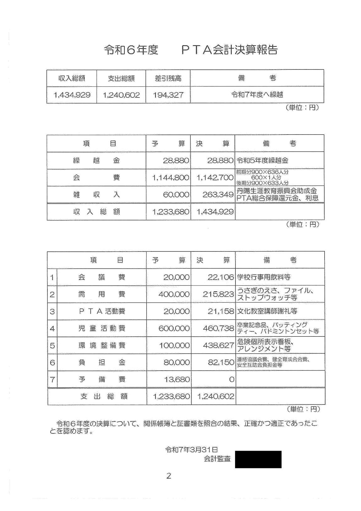
PTA会計（徴収事務・通帳保管は校長が受任）
支出総額が予算総額を超えた決算。
総会の予算議決を超える支出。
問題点
- R6の支出総額1,240,602円は予算総額1,233,680円を6,922円超えている。費目間の流用では、総額の超過は説明できない。
- 環境整備費438,627円は予算100,000円の439%。摘要は「危険個所表示看板、アレンジメント等」。危険箇所の表示看板は学校の施設の安全管理に関わるもので、市の経費である可能性が高い。
- 雑収入263,349円（予算60,000円）には「丹陽生涯教育振興会助成金」が含まれる。増えた収入で環境整備を拡大している。
- 令和7年度の業務委任契約により、校長がPTAから「PTA会費の徴収事務」「印鑑、出納簿及び預金通帳の保管」を無報酬で受任している。
法令・規約への該当性
- 疑い：中当該PTAの規約 予算総額を超える支出は総会の議決を経ていない。
- 疑い：強学校教育法5条 学校の安全表示は学校管理の経費。
- 要確認地方財政法27条の4・同法施行令52条2号 看板の設置が建物への工事を伴えば該当し得る。
請求・確認すべき資料
- PTAへの請求：環境整備費の明細、看板の設置場所・発注者
重要度BNo.26② 学校が負担すべき経費の肩代わり
丹陽西小R5・R6年度決算
需用費「うさぎのえさ、ファイル、ストップウォッチ等」、児童活動費「バッティングティー、バドミントンセット等」。資源回収会計（R6）からは「温湿度計、体温計、丸椅子（家庭科室用）等」196,350円、「農機修理代等」33,837円を支出。

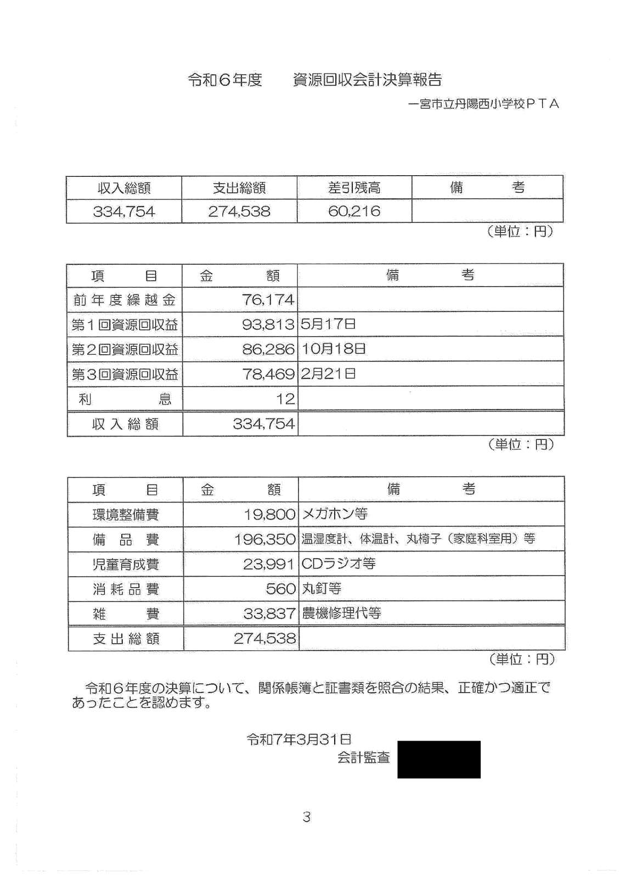
PTA／校長／一宮市
PTAの会費・資源回収金による学校の消耗品・備品の購入。
学校の物品費をPTAが負担。
問題点
- 需用費（R6：215,823円）は「うさぎのえさ、ファイル、ストップウォッチ等」。学校で飼育する動物の餌や授業用の器具は、学校の教育活動費である。
- 児童活動費（R6：460,738円）は「卒業記念品、バッティングティー、バドミントンセット等」。体育の用具は学校の備品・消耗品である。
- 資源回収会計（R6）からは備品費196,350円「温湿度計、体温計、丸椅子（家庭科室用）等」、雑費33,837円「農機修理代等」。温湿度計・体温計は熱中症対策・保健室用、家庭科室の椅子は特別教室の備品で、いずれも市が整備すべきもの。
- R5の資源回収会計にも「ラミネーター、ページヘルパー」「サッカーボール」「ストップウォッチ、ラインテープ」「七十五周年記念誌」がある。
- 令和7年度の業務委任契約により、校長がPTAから「PTA会費の徴収事務」「印鑑、出納簿及び預金通帳の保管」を無報酬で受任している。
法令・規約への該当性
- 疑い：強学校教育法5条 学校の経費は、法令に特別の定めがある場合を除き、設置者（一宮市）が負担する。
- 参考文部科学省 平成24年5月9日 初等中等教育局長通知 学校の管理運営経費は設置者が負担すべきもの。学校の会計は学校関係団体の会計と明確に区分して処理する。
想定される反論と評価
「PTAの判断で寄贈した」との反論が想定される。その場合、市の寄附受納手続と財産登録を確認する必要がある。
請求・確認すべき資料
- 一宮市への開示請求：丹陽西小のPTAからの物品寄附の受納記録
- PTAへの請求：購入物品の明細
重要度BNo.27⑦ 予算統制・繰越金
丹陽南小R5・R6年度決算
会費を児童1人あたり1,560円で集めている（兄弟姉妹それぞれに課金）。R5の差引残高687,624円が会費645,320円を上回り、R6も491,968円（会費の79%）が繰り越されている。学校運営費は271,650円／646,269円で、摘要は「消耗品費 行事費」だけ。資源回収会計で新1年生エプロンセット100,800円／115,500円を購入。

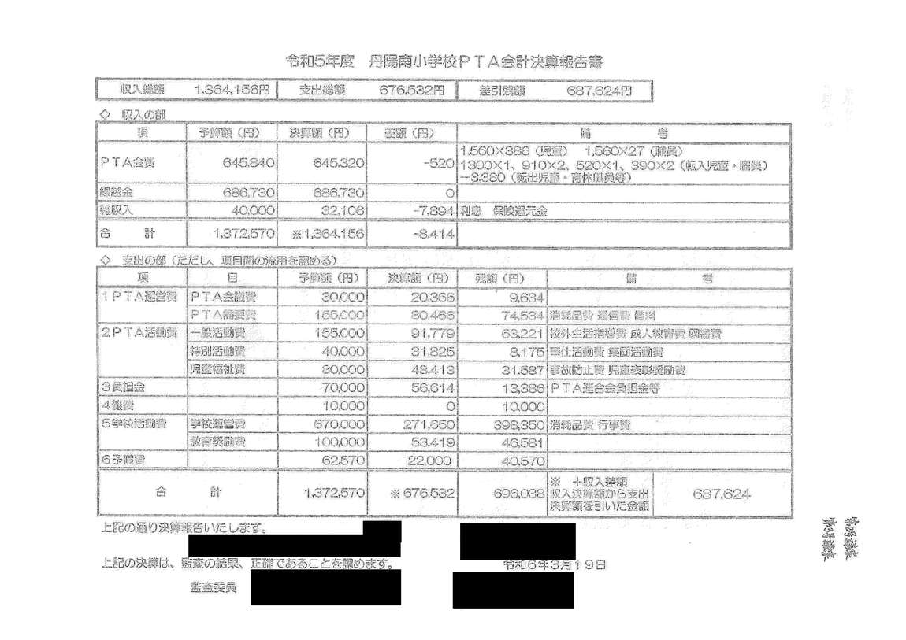

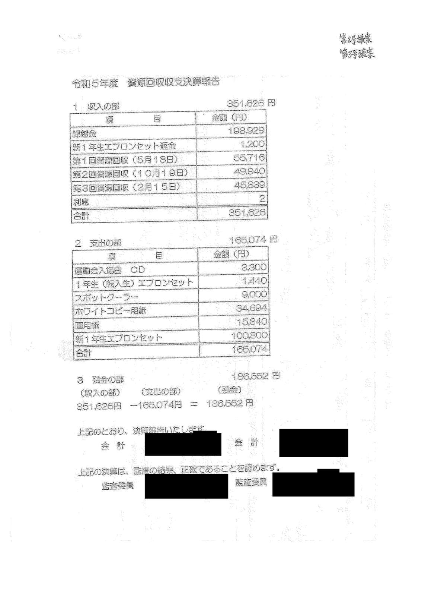
PTA（徴収事務・経理事務一般は校長が受任）
児童単位で課金し、会費を上回る繰越金を抱える会計。
会員資格と課金単位の不一致、過大な繰越、学校運営費の負担。
問題点
- 会費は児童1人あたり1,560円で、兄弟姉妹それぞれに課金している。PTAの会員は保護者であり、子どもの数で会費を変えると、会員としての地位と負担が対応しない。
- R5の差引残高687,624円は、同年の会費645,320円を上回る。R6も491,968円（会費625,300円の79%）を繰り越している。会費を下げるか、使途を示すべき規模である。
- 款「学校活動費」の学校運営費（R5：271,650円、R6：646,269円）の摘要は「消耗品費 行事費」だけで、学校のどの行事の何に使ったか分からない。
- 資源回収会計で「新1年生エプロンセット」（R5：100,800円、R6：115,500円）を購入している。家庭科・給食で使う教材を一律に配る費用で、学校の教材費の性格を持つ。ほかに「通学団腕章」「見守り隊腕章」「運動会特大旗」「スポットクーラー」「ホワイトコピー用紙」。
- 資源回収会計の決算には監査日の記載がない。
- 令和7年度の業務委任契約により、校長がPTAから「PTA会費の徴収事務」「印鑑、出納簿及び預金通帳の保管」を無報酬で受任している。（丹陽南小は「経理事務一般」も含む）
法令・規約への該当性
- 疑い：強学校教育法5条 学校運営費・コピー用紙・スポットクーラー等。
- 疑い：中当該PTAの規約 児童数課金、監査日の欠落。
想定される反論と評価
「兄弟姉妹分の会費は児童の利益に応じた負担」との説明が想定される。PTAの会員は保護者であり、受益が子どもに帰属するなら、それは学校の経費の性格を強める。
請求・確認すべき資料
- PTAへの請求：学校運営費の明細、繰越金の使途計画
- 市教委への照会：新1年生エプロンの公費・私費の区分
重要度CNo.28⑥ 監査・内部統制
浅井南小R5・R6年度決算
総会資料（全6ページ）の会費会計・特別会計の決算に、監査報告も監査人の署名もない。

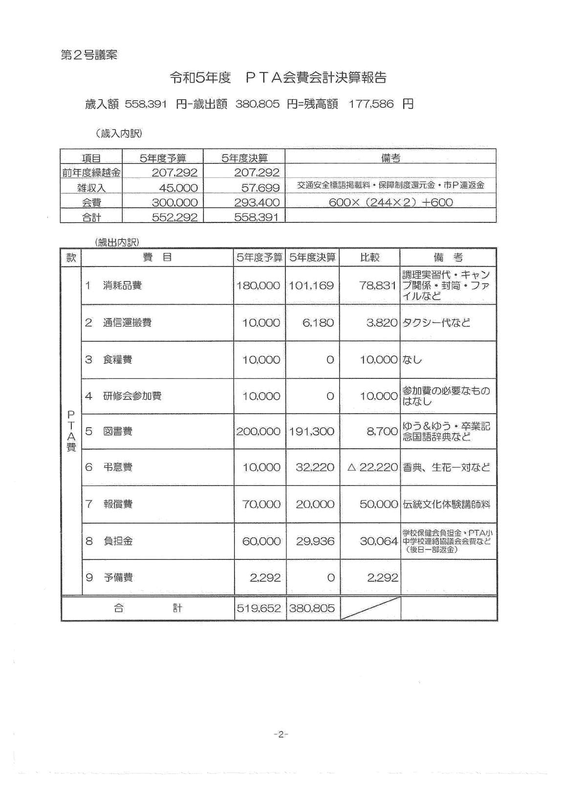

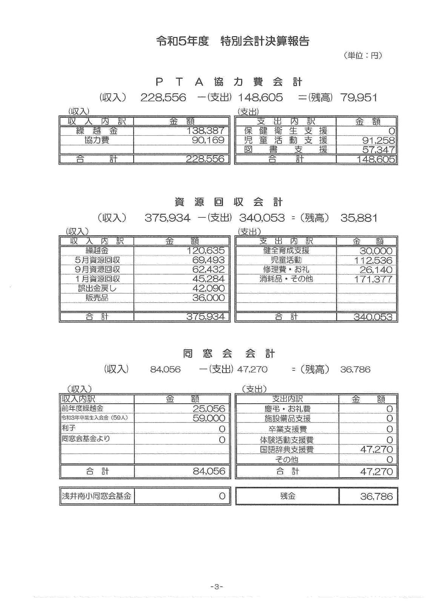
PTA会計／会計監査委員（規約上1名）
総会資料の決算に監査報告がない。
監査手続の不履行の疑い。
問題点
- R5・R6とも、総会資料（全6頁）の会費会計・特別会計（協力費・資源回収・同窓会）の決算に、監査報告も監査人の署名もない。
- 浅井南小規約は、会計が「会計監査を経て総会に決算報告」をし、会計監査委員が「総会において報告する」と定めている。総会資料に監査報告がないことは、この手続が守られていないおそれを示す。
- 浅井南小規約第8条は会計年度を「3月1日より翌年2月28日まで」としている。決算書の表題は「令和5年度」「令和6年度」で、どの期間の決算か明示されていない。
- 開示文書に業務委任契約書は含まれていない（契約の有無は不明）。
法令・規約への該当性
- 疑い：強当該PTAの規約 規約の会計・会計監査委員の職務規定に反するおそれ。
請求・確認すべき資料
- PTAへの請求：監査報告書、会計期間の確認
重要度CNo.29④ 学校の会計・個人負担金との混在
浅井南小R5・R6年度決算
同窓会会計を特別会計としてPTAの決算に含めている。同窓会の「国語辞典支援費」47,270円／37,490円と、会費会計の図書費「卒業記念・入学祝い国語辞典」が重複している可能性がある。資源回収会計には「誤出金戻し」42,090円（R5）、協力費会計には「誤出勤戻し」10,200円（R6）がある。R6の「健全育成支援」は金額欄に「PTA会費で捻出」と書かれているだけで、金額がない。

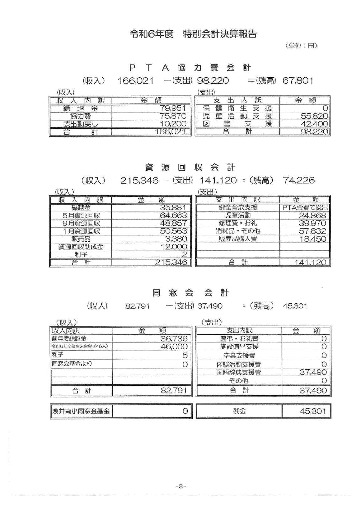
PTA／同窓会（別団体）
PTAの決算に別団体（同窓会）の会計を含め、誤出金の戻しを収入計上。
別団体会計の混在、二重負担の疑い、誤払いの反復。
問題点
- 同窓会会計は別の団体の会計であり、PTA総会で承認する性質のものではない。卒業生の入会金（R5「令和3年卒業生入会金（59人）」、R6「令和6年卒業生入会金（46人）」）は、R5の表記の年度が不自然で、記載誤りの可能性がある。
- 同窓会会計から「国語辞典支援費」（R5：47,270円、R6：37,490円）、会費会計の図書費から「卒業記念・入学祝い国語辞典」（R6：77,240円）を支出している。同じ国語辞典を二つの会計で払っている可能性がある。
- 資源回収会計に「誤出金戻し」42,090円（R5）、協力費会計に「誤出勤戻し」10,200円（R6）がある。誤った支払いが続いている。
- R6資源回収会計の「健全育成支援」は、金額欄に「PTA会費で捻出」と書かれているだけで、金額がない。会費会計のどの費目から出したのかも分からない。
法令・規約への該当性
- 疑い：中当該PTAの規約 会計の正確な記録・報告の義務。
請求・確認すべき資料
- PTAへの請求：国語辞典の購入明細（両会計分）、誤出金の内容、健全育成支援の金額
重要度CNo.30⑦ 予算統制・繰越金
浅井南小R6年度決算
弔意費54,000円（予算10,000円の540%）、負担金57,056円（同190%）、消耗品費229,977円（予算170,000円の135%）。

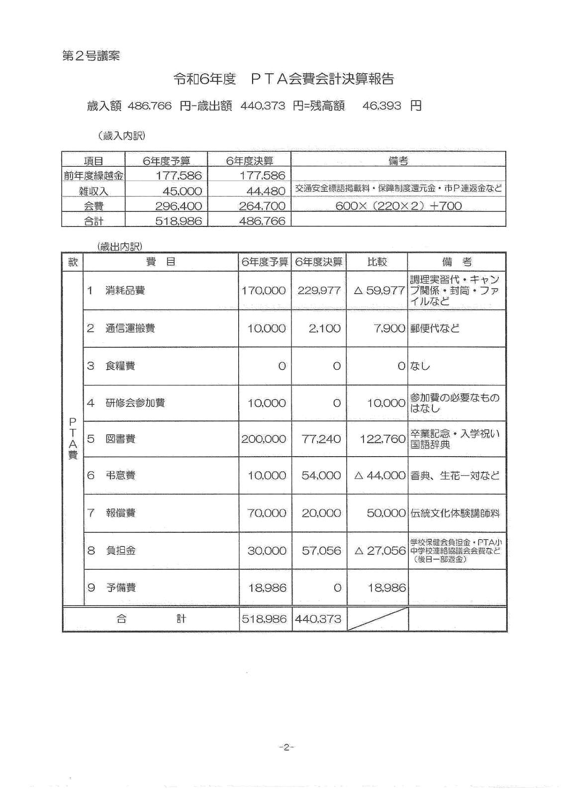
PTA会計
費目別の予算超過。
予算統制の不在。
問題点
- R6の弔意費54,000円は予算10,000円の540%、負担金57,056円は同190%（「後日一部返金」と注記）、消耗品費229,977円（「調理実習代・キャンプ関係・封筒・ファイルなど」）は予算170,000円の135%。
- 「調理実習代」「キャンプ関係」は学校の教育活動（家庭科・野外活動）の費用である。
- 規約に「各項目の流用を認める」旨の注記はあるが、5倍を超える執行は予算の意味を失わせる。
法令・規約への該当性
- 疑い：中当該PTAの規約 予算の議決。
- 疑い：中学校教育法5条 調理実習・キャンプの費用。
請求・確認すべき資料
- PTAへの請求：弔意費・消耗品費の明細
重要度CNo.31⑥ 監査・内部統制
大和西小R5・R6年度決算
単独ファイルの決算報告に、監査報告・監査人の署名・摘要がいずれもない。

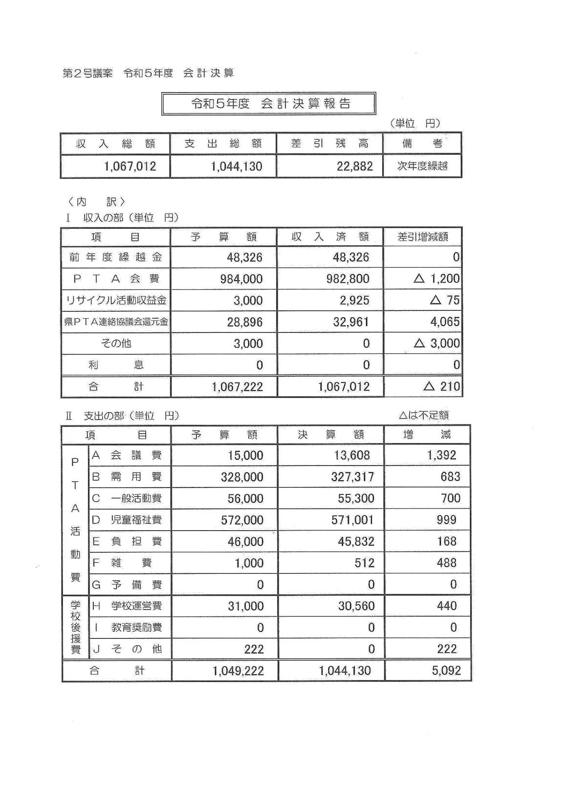

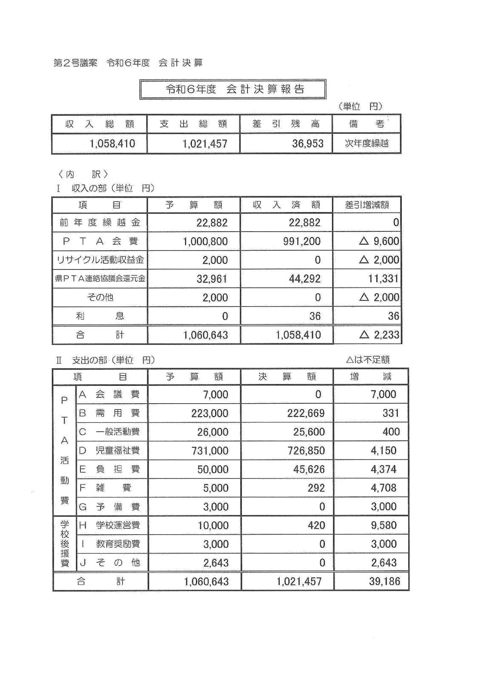
PTA会計／会計監査委員会（規約上3名）
決算報告に監査報告・摘要がない。
監査手続の不履行の疑い。
問題点
- R5・R6の会計決算報告（単独ファイル）に、監査報告・監査人の署名・摘要がいずれもない。
- 大和西小規約第9条は「本会の会計を監査するため、会計監査委員3名をおく」とし、会計監査委員は前役員を原則とする。
- 規約は会計2名を「保護者1、教師1」とし、副会長3名のうち1名を校長とする。さらに業務委任契約で校長が経理事務を受任している。学校側がPTA会計に深く関与しながら、監査の記録がない。
法令・規約への該当性
- 疑い：強当該PTAの規約 規約第9条の会計監査委員会による監査の記録がない。
請求・確認すべき資料
- PTAへの請求：監査報告書
重要度CNo.32⑤ 計数誤り・決算表示の不備
大和西小R5年度決算
収入予算の合計1,067,222円と支出予算の合計1,049,222円が18,000円合わない（予算が均衡していない）。
PTA（予算の作成者）
収入予算と支出予算が一致しない予算。
予算の編成誤り。
問題点
- R5の収入予算合計1,067,222円に対し、支出予算合計は1,049,222円で、18,000円合わない。予算は収入と支出が一致するように組むのが原則で、総会でこの予算が承認されたことになる。
法令・規約への該当性
- 疑い：中当該PTAの規約 総会で承認された予算自体に誤りがある。
請求・確認すべき資料
- PTAへの請求：R5年度予算案（総会資料）
重要度BNo.33② 学校が負担すべき経費の肩代わり
大和西小R5・R6年度決算
児童福祉費571,001円／726,850円が支出の55%／71%を占めるが、内容の記載がない。各費目の決算額が予算額とほぼ同じ（数百円の差）。
PTA／校長（経理事務の受任者）
内容不明の「児童福祉費」が支出の過半を占める。
使途の不明示。
問題点
- 児童福祉費はR5：571,001円（支出の55%）、R6：726,850円（同71%、予算を572,000円から731,000円に増額）。何に使ったのか一切書かれていない。
- 各費目の決算額が予算額とほぼ同じ（差は数百円〜数千円）。予算を使い切るように支出しているか、決算に合わせて予算を組んでいる可能性がある。
- 款「学校後援費」の学校運営費（R5：30,560円）・教育奨励費もある。
法令・規約への該当性
- 要確認学校教育法5条 児童福祉費の内容が学校の教育活動費であれば該当。
- 疑い：中当該PTAの規約 使途を示さない決算。
請求・確認すべき資料
- PTAへの請求：児童福祉費の明細・証憑
重要度BNo.34② 学校が負担すべき経費の肩代わり
浅野小R5・R6年度決算
款「後援・その他関係費」268,696円／228,786円（学校施設設備費「校内整備費」100,000円（R5）、観劇代補助費など）。資源回収会計から、図書館・総合的な学習・情報教育・掲示・印刷製本など学校の教育活動費を236,139円／500,929円支出している。

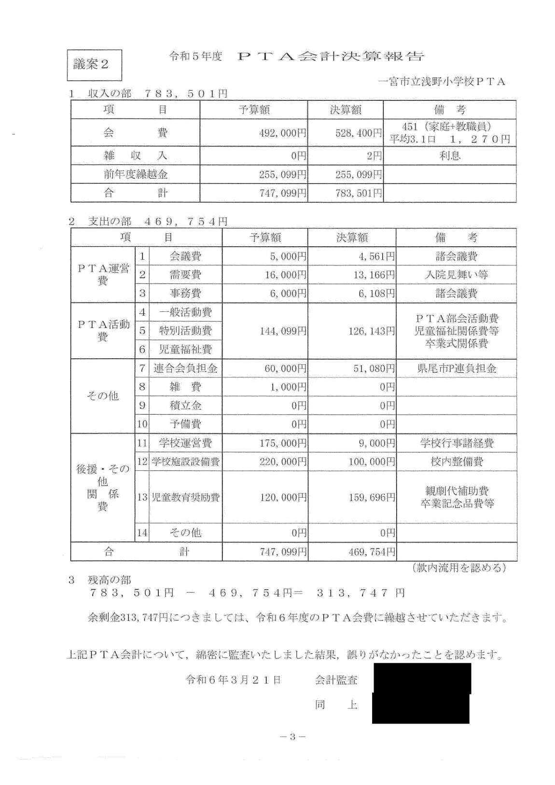

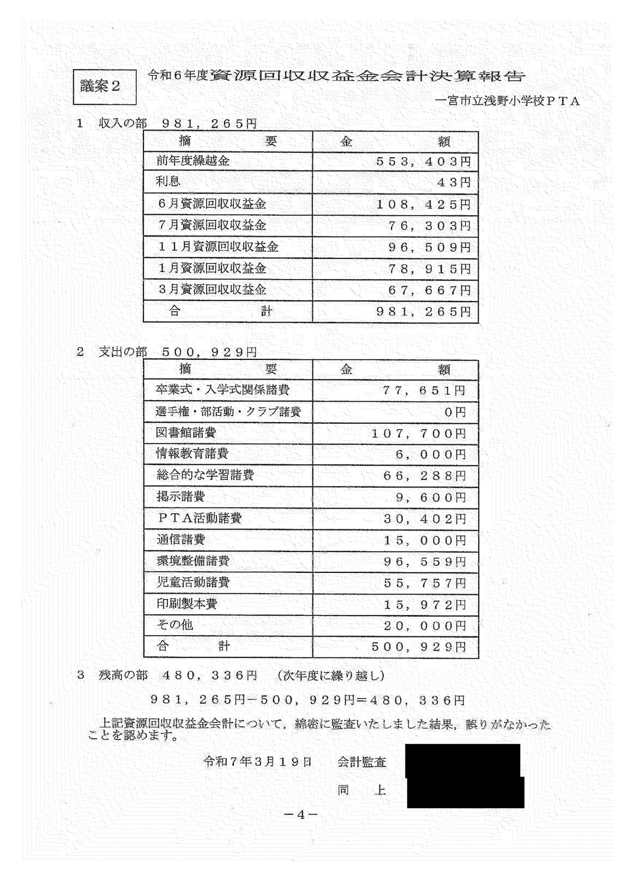
PTA（規約上、会計に学校教職員1名）／一宮市
PTA会費と資源回収金による学校の施設整備・教育活動費の負担。
学校の経費のPTA負担、口数制会費。
問題点
- 款「後援・その他関係費」はR5：268,696円（学校運営費9,000円「学校行事諸経費」、学校施設設備費100,000円「校内整備費」、児童教育奨励費159,696円「観劇代補助費・卒業記念品費等」）、R6：228,786円。
- 資源回収収益金会計からは、R5：236,139円（卒業式・入学式、図書館48,400円、情報教育16,200円、総合的な学習51,220円、掲示、印刷製本）、R6：500,929円（図書館107,700円、総合的な学習66,288円、環境整備96,559円、児童活動55,757円）を支出している。図書館の図書・総合的な学習・情報教育は学校の教育課程の経費である。
- 浅野小規約第16条は会費を「一家庭年額1口400円とし、一戸平均3口程度」と定める。「平均3口程度」という目安は、各家庭に複数口の負担を求める割当てに近い。R6の実績は平均2.1口。
- 浅野小規約は会計に「学校教職員（1名）」を充てる。
- 開示文書に業務委任契約書は含まれていない（契約の有無は不明）。
法令・規約への該当性
- 疑い：強学校教育法5条 学校の経費は、法令に特別の定めがある場合を除き、設置者（一宮市）が負担する。
- 要確認地方財政法27条の4・同法施行令52条2号 「校内整備費」「環境整備」の内容次第。
- 要確認地方財政法4条の5 学校教職員が口数の徴収に関与していれば問題になる。
請求・確認すべき資料
- PTAへの請求：校内整備費・資源回収金の支出明細
- 一宮市への開示請求：浅野小の図書・情報教育・総合的な学習の公費予算
重要度CNo.35⑤ 計数誤り・決算表示の不備
浅野小R6年度決算
学校運営費の決算額が「10,4000円」と書かれている（合計から逆算すると104,000円）。科目名が「需要費」と誤記。PTA活動費の3費目がまとめて計上され、内訳がない。

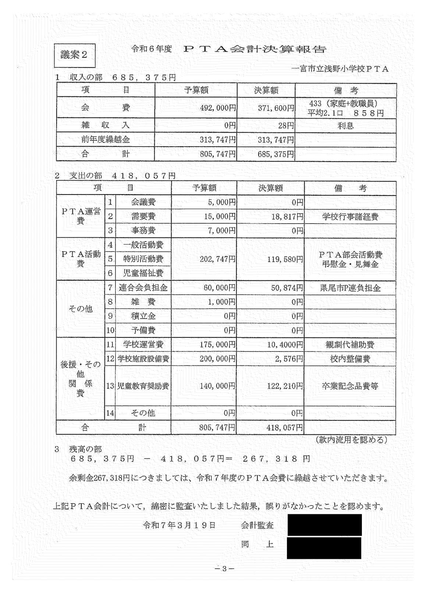
PTA会計／会計監査（2名）
決算書の誤記と内訳の欠如。
決算書の作成の不備。
問題点
- R6の学校運営費の決算額が「10,4000円」と書かれている（合計418,057円から逆算すると104,000円）。
- 科目名が「需要費」と誤記されている（正しくは需用費）。
- PTA活動費の一般活動費・特別活動費・児童福祉費の3費目が、予算・決算ともまとめて計上され、内訳がない（R6：119,580円）。
- 監査人2名が「綿密に監査いたしました結果、誤りがなかった」としているが、誤記を見落としている。
法令・規約への該当性
- 疑い：中当該PTAの規約 浅野小規約は会計が「会計監査を受け、総会において会計報告」すると定める。
請求・確認すべき資料
- PTAへの請求：訂正決算書、PTA活動費の内訳
重要度CNo.36⑤ 計数誤り・決算表示の不備
富士小R6年度決算
会計期間を「令和6.4.1〜令和7.3.24」とし、年度途中で締めている。「次年度当初需用費」212,120円と「次年度当初予備費」154,798円を支出に計上し、差引残高を0円と表示している（実際は繰越金）。

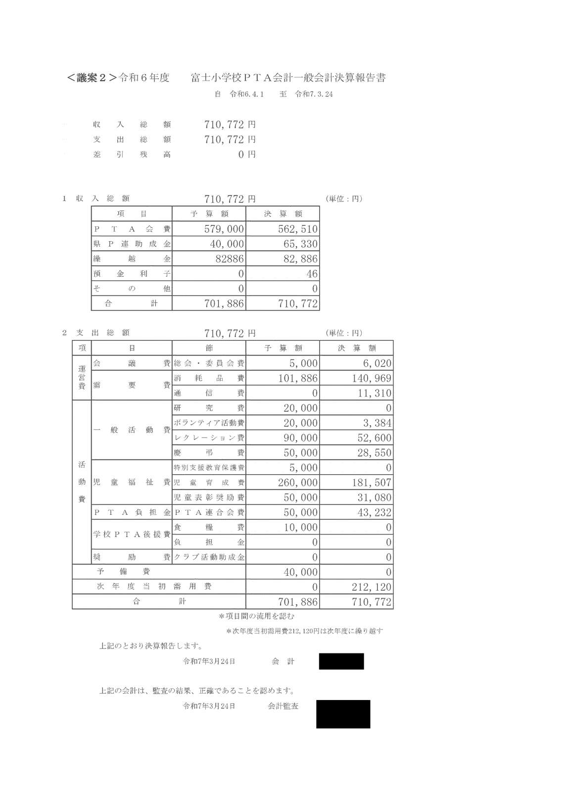

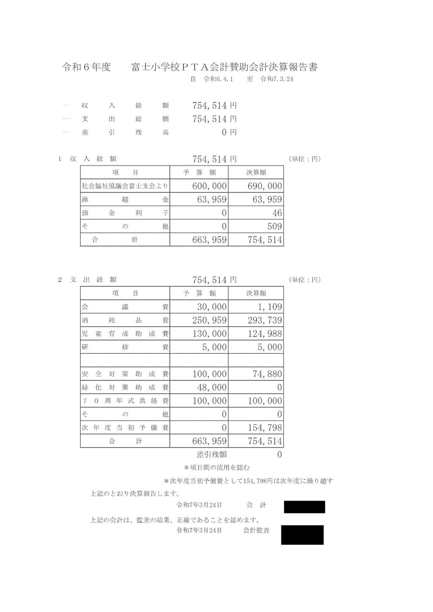
PTA会計（規約上、教頭が会計事務を担当）
規約と異なる会計期間で締めた決算。
決算の期間と繰越の表示の誤り。
問題点
- 富士小規約第8条は会計年度を「毎年4月1日に始まり翌年3月31日に終わる」と定めるが、R6決算の期間は「令和6.4.1 至 令和7.3.24」。3月25日〜31日の収支が決算に含まれない。
- 一般会計の支出に「次年度当初需用費」212,120円、賛助会計の支出に「次年度当初予備費」154,798円を計上し、差引残高を0円と表示している。実態は合計366,918円の繰越金である。
- 繰越金を支出に見せることで、会員には「使い切った」ように見え、多額の余剰金があることが分からない。
- 富士小規約は「教頭が会計事務を担当する」と定め、業務委任契約で校長が徴収事務と通帳保管を受任している。
- 令和7年度の業務委任契約により、校長がPTAから「PTA会費の徴収事務」「印鑑、出納簿及び預金通帳の保管」を無報酬で受任している。
法令・規約への該当性
- 疑い：強当該PTAの規約 規約第8条の会計年度と異なる期間で決算している。
- 疑い：中地方公務員法35条 教頭が勤務としてPTAの会計事務を担当している。
請求・確認すべき資料
- PTAへの請求：3/25〜3/31の通帳の動き、年度末残高
重要度BNo.37④ 学校の会計・個人負担金との混在
富士小R6年度決算
賛助会計の収入は「社会福祉協議会富士支会より」690,000円で、PTA会費562,510円より多い。支出の「70周年式典経費」100,000円は、特別会計の収入「賛助会計より」100,000円と同じ額で、式典に使われず特別会計に振り替えられただけの可能性がある。特別会計は支出0円で743,536円を持ち続けている。

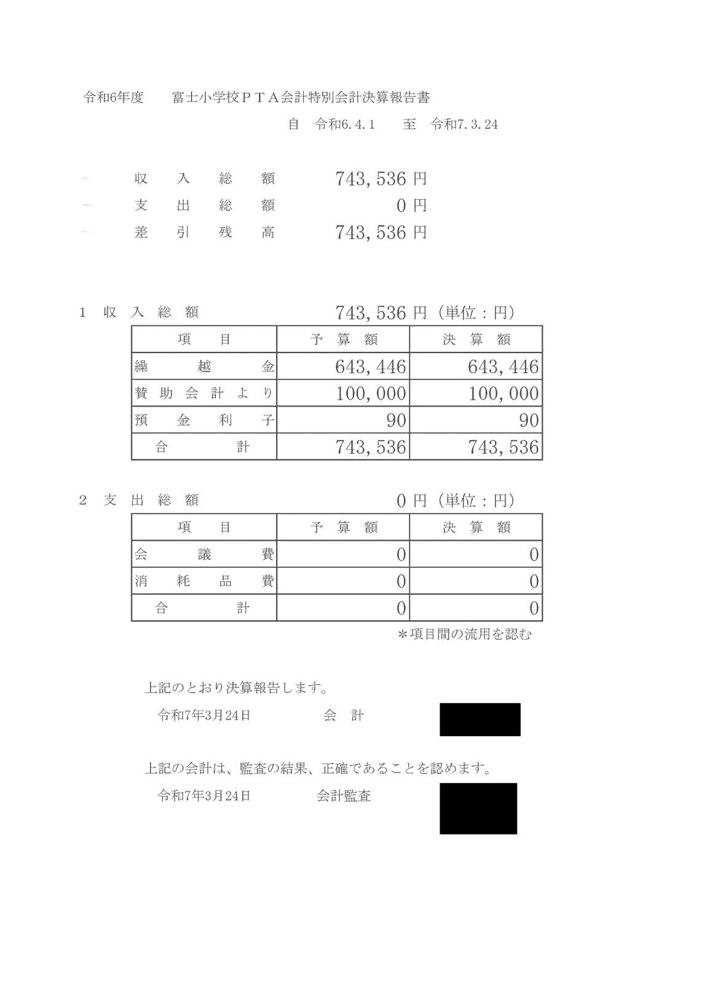
PTA／富士小学区の社会福祉協議会支会（資金の出し手）
外部団体からの資金を主財源とする賛助会計と、支出のない特別会計。
使途の不明確な振替、目的のない資金の滞留。
問題点
- 賛助会計の収入は「社会福祉協議会富士支会より」690,000円で、PTA会費562,510円より多い。社会福祉協議会の地区組織の資金が、PTAを通じて学校関係の経費に使われている。資金の原資と使途の指定を確認する必要がある。
- 支出「70周年式典経費」100,000円と、特別会計の収入「賛助会計より」100,000円が同額。式典の経費として外部に支払われず、特別会計に積み立てられただけの可能性がある。その場合、決算の費目表示が事実と異なる。
- 特別会計は支出0円で743,536円を保有している。何のための資金か、規約や総会資料に示されていない。
- 賛助会計の支出には消耗品費293,739円（予算250,959円超）、児童育成助成費124,988円、安全対策助成費74,880円がある。
法令・規約への該当性
- 疑い：中当該PTAの規約 費目表示と実態の不一致、目的の定めのない資金の保有。
- 要確認学校教育法5条 消耗品・安全対策の内容次第。
想定される反論と評価
「70周年式典の準備金として特別会計に移した」との説明が想定される。その場合は費目を「特別会計への繰出」とすべきである。
請求・確認すべき資料
- PTAへの請求：70周年式典の支出明細、特別会計の目的と使途計画
- 社協支会からの資金の趣旨・使途指定の確認
重要度BNo.38② 学校が負担すべき経費の肩代わり
浅井中小R5・R6年度決算
外部講師料（命の授業・教養講座・入学説明会等）、教育新聞・教育時報、フッ素洗口の薬品。資源回収会計からは熱中症対策の物品、延長コード・救急セット、給食清掃用物品を購入。すべての支出をまとめて項「生徒教育奨励費」としている。

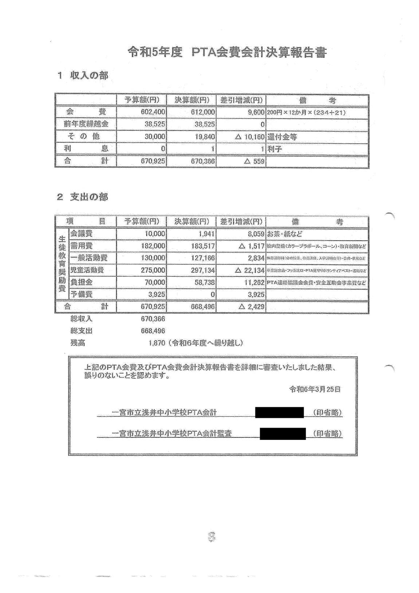

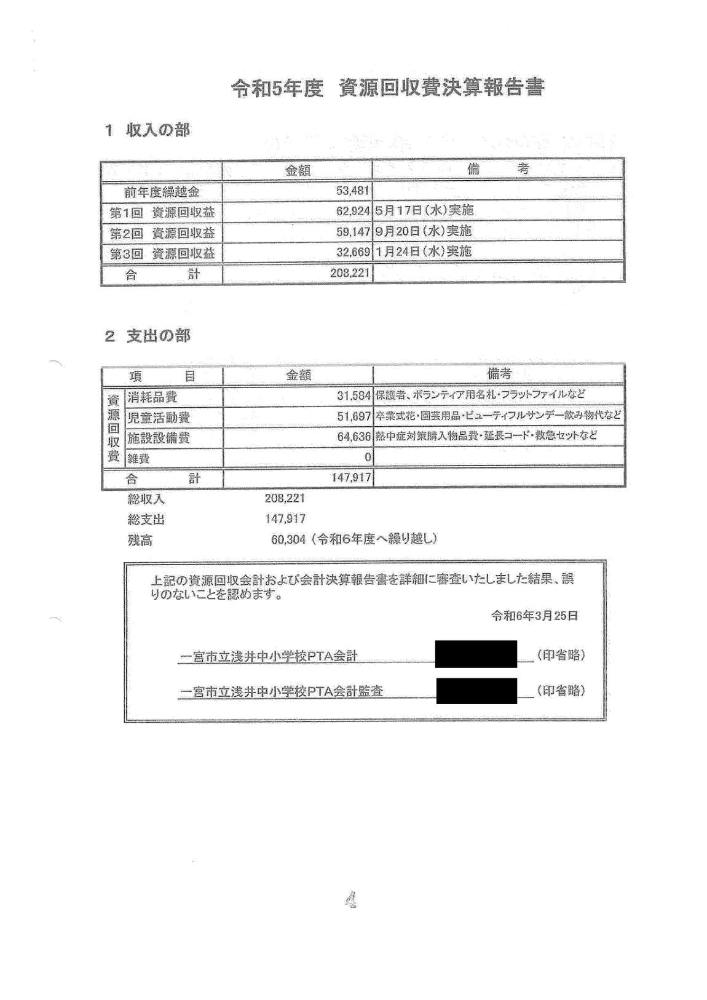

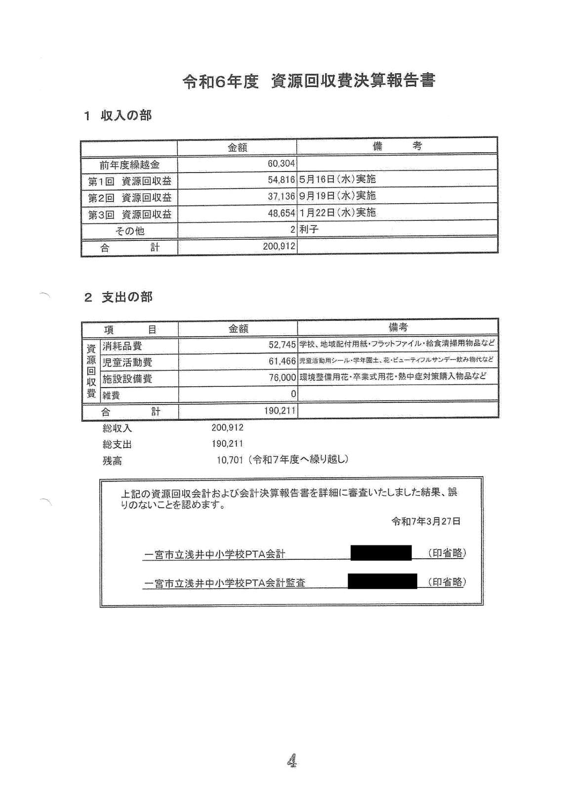
PTA／校長（経理事務の受任者）／一宮市
PTA会費・資源回収金による学校の教育活動・保健・給食関係経費の負担。
学校の経費のPTA負担。
問題点
- 項「生徒教育奨励費」の下に全支出がまとめられている。小学校で「生徒」と表記するのは他校の様式の流用と見られ、支出全体を学校への奨励費として扱う構造になっている。
- 一般活動費（R5：127,166円）は「外部講師料（命の授業、教養講座、入学説明会等）・香典・供花など」。命の授業・入学説明会は学校の教育活動・学校行事であり、講師料は市の経費である。
- 需用費は「校内設備（カラープラボール、コーン）・教育新聞」（R5）、「教育新聞・教育時報・うさぎ餌・便箋」（R6）。教育新聞・教育時報は教職員向けの業界紙である。
- 児童活動費は「卒業記念品・フッ素洗口・PTA見守りボランティアベスト・書籍」。フッ素洗口は学校保健の事業で、薬品代をPTAが負担している。
- 資源回収費からは「熱中症対策購入物品費・延長コード・救急セット」（R5：64,636円）、「給食清掃用物品」「環境整備用花・卒業式用花・熱中症対策購入物品」（R6）。熱中症対策・救急セット・給食清掃用品は、学校の保健・安全管理の経費である。
- 令和7年度の業務委任契約により、校長がPTAから「会費の集金及び督促」「印鑑、出納簿及び預貯金通帳等の保管・管理」「経理事務」を無報酬で受任している。
法令・規約への該当性
- 疑い：強学校教育法5条 学校の経費は、法令に特別の定めがある場合を除き、設置者（一宮市）が負担する。
- 参考文部科学省 平成24年5月9日 初等中等教育局長通知 学校の管理運営経費は設置者が負担すべきもの。学校の会計は学校関係団体の会計と明確に区分して処理する。
想定される反論と評価
「命の授業はPTA主催の講演会」との反論が想定される。主催者・案内文書の発信者を確認する必要がある。
請求・確認すべき資料
- PTAへの請求：外部講師の依頼文書・謝礼の領収書
- 市教委への照会：フッ素洗口薬品・熱中症対策物品の公費予算
重要度BNo.39② 学校が負担すべき経費の肩代わり
小信中島小R5・R6年度決算
環境整備費486,504円／303,427円（摘要「熱中症対策、環境整備等」）、負担費「講師謝礼、手土産等」172,308円（予算の144%）。予備費を「地域への郵送代金等」に毎年使い、R6は予算32,211円を超える43,150円を支出。特別会計は645,706円を持ち、R5の支出は0円。

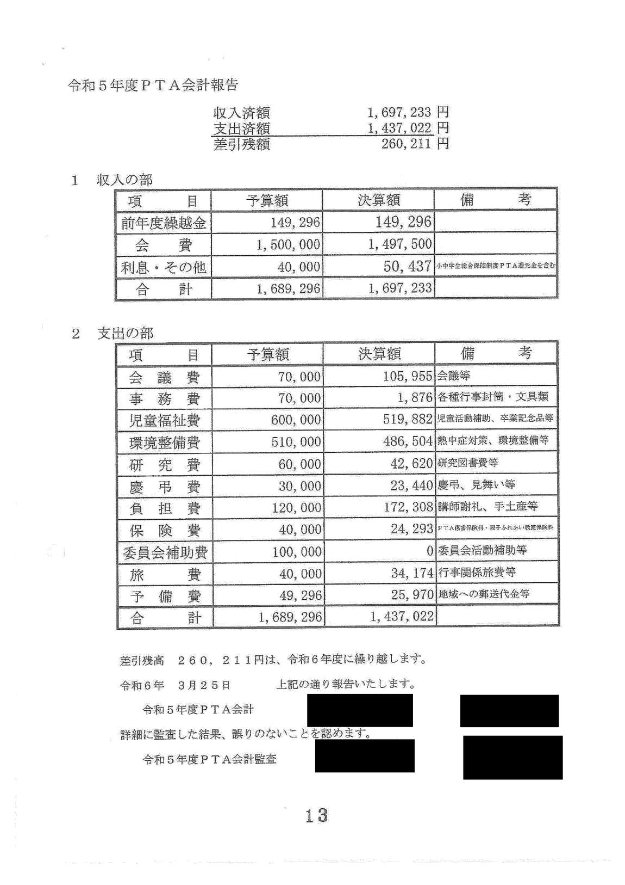

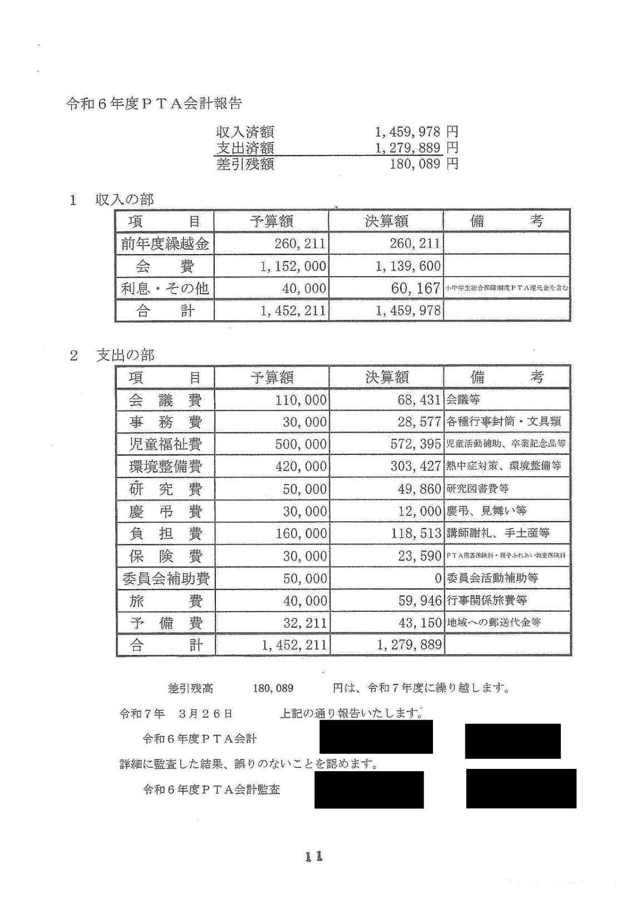

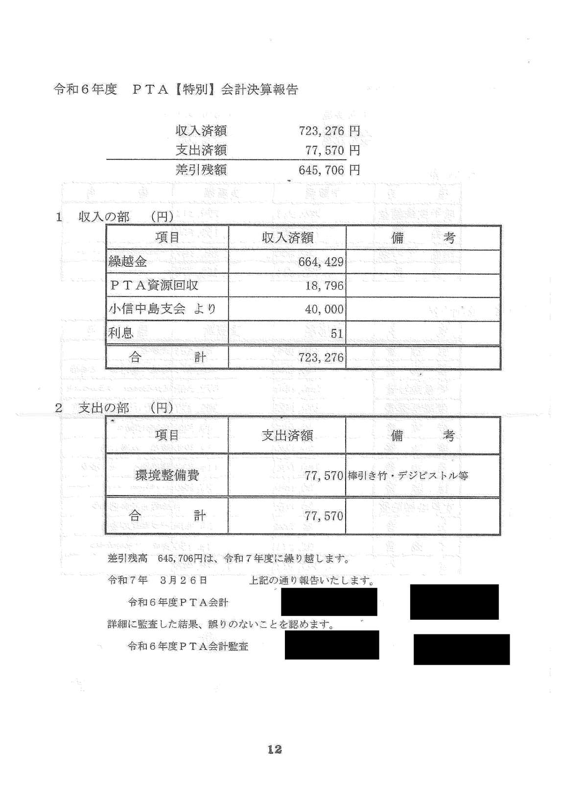
PTA／校長（経理事務の受任者）／一宮市
会費による環境整備・講師謝礼の負担、予備費の経常的使用、目的のない特別会計。
学校の経費のPTA負担、予算統制の不在。
問題点
- 環境整備費（R5：486,504円、R6：303,427円）の摘要は「熱中症対策、環境整備等」。熱中症対策の設備（エアコン、遮光、冷風機等）であれば、建物の維持・修繕又は学校の備品の経費である。会費（R5：1,497,500円）の約3分の1を占める。
- 負担費（R5：172,308円、予算の144%）の摘要は「講師謝礼、手土産等」。学校の授業・行事の講師であれば市の経費である。
- 予備費を毎年「地域への郵送代金等」に使い、R6は予算32,211円を超える43,150円を支出した。予備費の予算超過は、予備費の性格に反する。
- 特別会計は「小信中島支会より」毎年40,000円を受け入れ、R5は支出0円、R6は「棒引き竹・デジピストル等」（運動会の用具）77,570円を支出し、645,706円を保有している。目的・使途計画が示されていない。
- 令和7年度の業務委任契約により、校長がPTAから「会費の集金及び督促」「印鑑、出納簿及び預貯金通帳等の保管・管理」「経理事務」を無報酬で受任している。
法令・規約への該当性
- 疑い：強学校教育法5条 学校の経費は、法令に特別の定めがある場合を除き、設置者（一宮市）が負担する。
- 要確認地方財政法27条の4・同法施行令52条2号 熱中症対策・環境整備の内容次第。
- 疑い：中当該PTAの規約 予備費の予算超過、特別会計の目的不明。
請求・確認すべき資料
- PTAへの請求：環境整備費・負担費の明細
- 一宮市への開示請求：小信中島小の熱中症対策の公費措置状況
重要度BNo.40② 学校が負担すべき経費の肩代わり
開明小R5・R6年度決算
研修費「現職教育資料・現職教育講演会等」113,156円／108,993円（教員研修の費用）。学校運営補助費「封筒、切手、テントレンタル代等」167,528円／「テントレンタル代、住宅地図等」266,554円。備品・設備費「1・2年傘立て、理科室椅子等」144,135円。保健衛生費「感染予防用マスク」。

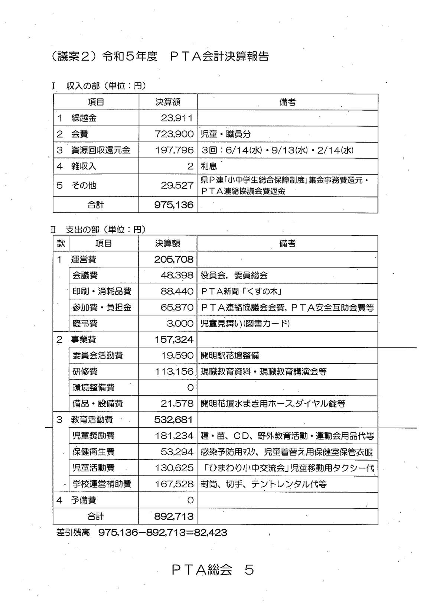

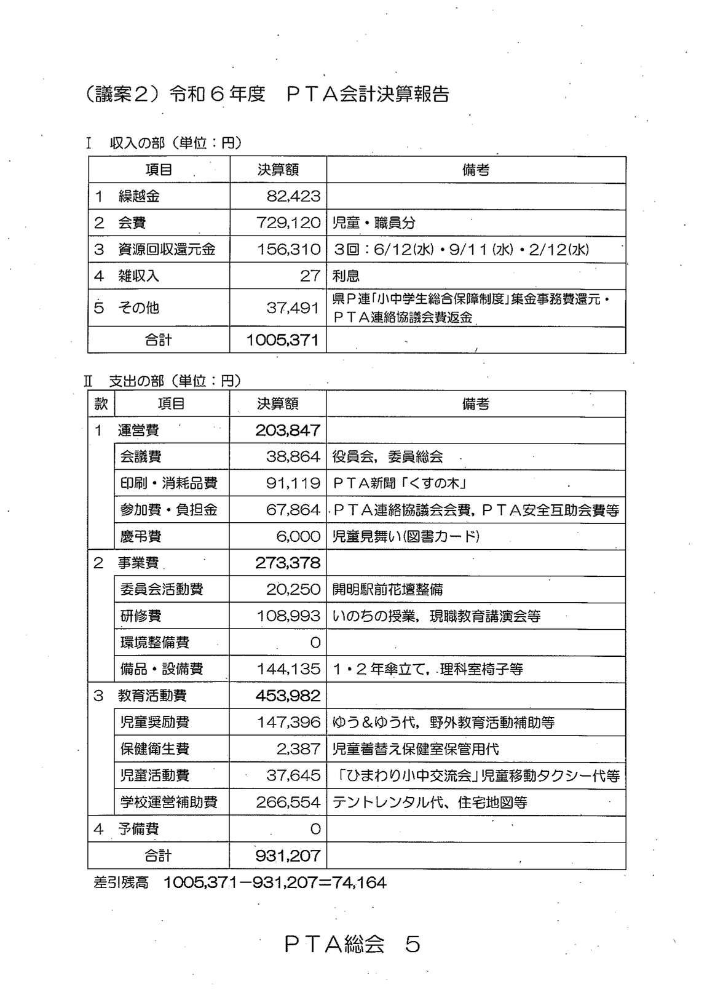
PTA（副会長に校長）／校長（徴収事務・通帳保管の受任者）／一宮市
PTA会費による教員研修・学校運営・備品の負担。
学校の経費のPTA負担。
問題点
- 研修費（R5：113,156円「現職教育資料・現職教育講演会等」、R6：108,993円「いのちの授業、現職教育講演会等」）。「現職教育」は教員の校内研修を指す用語で、教員研修の費用を保護者が負担している。
- 学校運営補助費（R5：167,528円「封筒、切手、テントレンタル代等」、R6：266,554円「テントレンタル代、住宅地図等」）。学校の通信費・行事のテント借料・家庭訪問用の住宅地図は、学校の管理運営経費である。款名「学校運営補助費」自体が学校の経費の補助を示す。
- 備品・設備費（R6：144,135円「1・2年傘立て、理科室椅子等」）。傘立て・理科室の椅子は学校の備品である。
- 保健衛生費（R5：53,294円「感染予防用マスク、児童着替え用保健室保管衣服」）。保健室の備品・消耗品である。
- 児童活動費「ひまわり小中交流会 児童移動用タクシー代」。学校間交流の移動費である。
- 開明小規約は副会長2名のうち1名を校長とし、会費を「一児童月額150円」と児童単位で定めている。
- 令和7年度の業務委任契約により、校長がPTAから「PTA会費の徴収事務」「印鑑、出納簿及び預金通帳の保管」を無報酬で受任している。
法令・規約への該当性
- 疑い：強学校教育法5条 学校の経費は、法令に特別の定めがある場合を除き、設置者（一宮市）が負担する。
- 参考文部科学省 平成24年5月9日 初等中等教育局長通知 学校の管理運営経費は設置者が負担すべきもの。学校の会計は学校関係団体の会計と明確に区分して処理する。
想定される反論と評価
「現職教育講演会はPTA会員も参加できる講演会」との反論が想定される。主催者・対象者・案内文書の発信者を確認する必要がある。
請求・確認すべき資料
- 市教委への照会：開明小の教員研修・通信費・行事借料・理科室備品の公費予算
- PTAへの請求：研修費・学校運営補助費の領収書
重要度CNo.41⑥ 監査・内部統制
開明小R5・R6年度決算
決算報告に予算額の列がなく、予算と比べられない。合計欄に「1005,371」と桁区切りの誤り。
PTA会計／会計監査委員（規約上1名）
予算額の記載がない決算書と、遅い監査日。
予算と決算の比較ができない決算報告。
問題点
- R5・R6の決算報告に予算額の列がなく、決算額だけが示されている。会員は、総会で承認した予算どおりに執行されたか確認できない。
- R6の収入合計が「1005,371」と桁区切りを誤っている。
- 監査報告の日付はR6.4.18、R7.4.21。監査は会計監査委員1名で、「会計簿を綿密に監査した」としているが、予算との対比のない決算をどう監査したか不明。
法令・規約への該当性
- 疑い：中当該PTAの規約 開明小規約は総会で「予算の決定並びに決算の承認」をすると定める。予算との比較なしに決算を承認させている。
請求・確認すべき資料
- PTAへの請求：R5・R6の予算書
重要度BNo.42② 学校が負担すべき経費の肩代わり
木曽川西小R5・R6年度決算
環境整備費650,025円／515,156円（「校内環境整備等」）と奨励費944,839円／739,745円（「児童の全般的な活動費」）の合計が、会費の81%／68%を占める。PTA自身の会議費・部会活動費はほぼ0円。

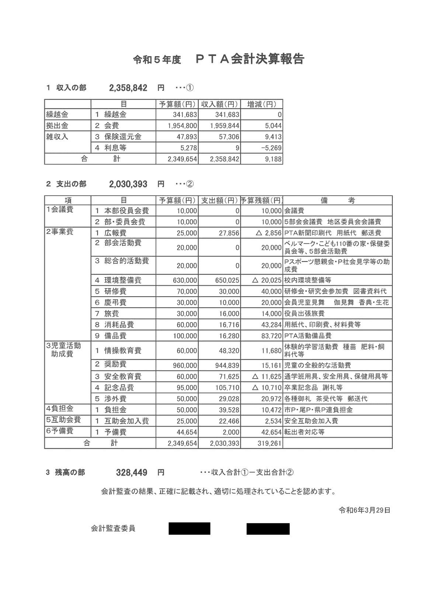
PTA／校長（徴収事務・通帳保管の受任者）／一宮市
会費の大半を学校の環境整備と児童の活動費に充てる会計。
学校の経費のPTA負担、PTA本来活動の空洞化。
問題点
- 環境整備費（R5：650,025円、R6：515,156円、摘要「校内環境整備等」）と奨励費（R5：944,839円、R6：739,745円、摘要「児童の全般的な活動費」）の合計は、会費のR5：81%、R6：68%。
- どちらも摘要が抽象的で、内訳が分からない。「校内環境整備」が校舎の修繕を含めば地方財政法27条の4の問題、「児童の全般的な活動費」が授業・行事の経費であれば学校教育法5条の問題になる。
- 一方で、PTA自身の本部役員会費・部会活動費・総合的活動費・研修費・備品費はほぼ0円。PTAが会員の活動のためではなく、学校の財源として機能している。
- R6の繰越は556,891円（前年比＋228,442円）。
- 令和7年度の業務委任契約により、校長がPTAから「PTA会費の徴収事務」「印鑑、出納簿及び預金通帳の保管」を無報酬で受任している。
法令・規約への該当性
- 疑い：強学校教育法5条 学校の経費は、法令に特別の定めがある場合を除き、設置者（一宮市）が負担する。
- 要確認地方財政法27条の4・同法施行令52条2号 校内環境整備の内容次第。
請求・確認すべき資料
- PTAへの請求：環境整備費・奨励費の明細と証憑
- 一宮市への開示請求：PTAからの寄附受納の記録
重要度BNo.43⑦ 予算統制・繰越金
葉栗中R5年度決算
支出総額2,469,647円が予算総額2,262,268円を207,379円超えている。教育活動費1,939,323円（予算の129%）は会費1,753,200円を上回り、摘要は「スポーツマンクラブ登録費、部活動大会参加費、熱中症対策等」。雑収入644,425円（予算の403%）には内訳がない。

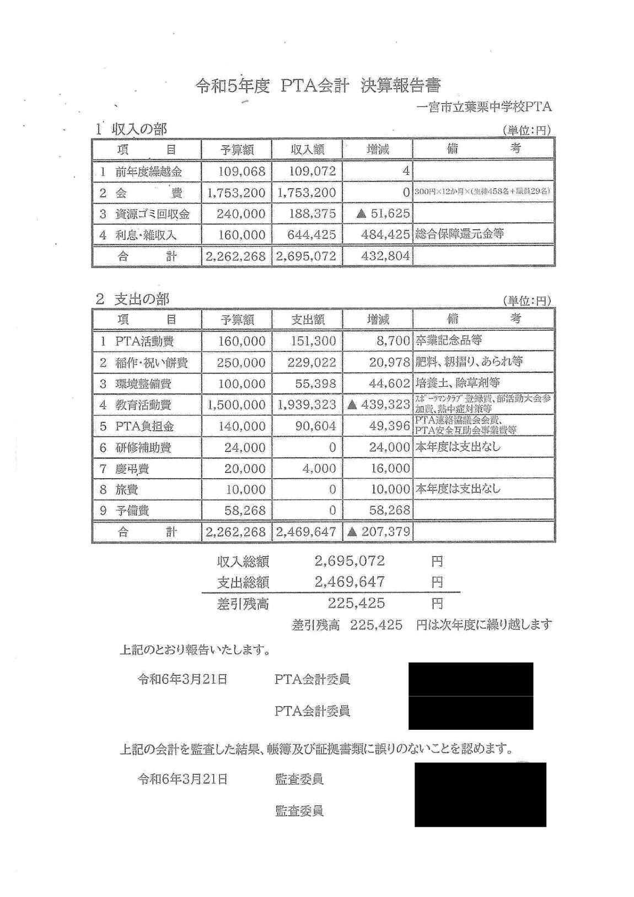
PTA／校長（徴収事務・通帳保管の受任者）／一宮市
会費を上回る教育活動費と、予算総額の超過。
学校の部活動費等のPTA負担、予算統制の不在。
問題点
- R5の支出総額2,469,647円は予算総額2,262,268円を207,379円超えている。費目間流用では説明できない。
- 教育活動費1,939,323円（予算1,500,000円の129%）は会費1,753,200円を上回る。摘要は「スポーツマンクラブ登録費、部活動大会参加費、熱中症対策等」。部活動の登録費・大会参加費・学校の熱中症対策は、学校の教育活動・管理の経費である。
- 利息・雑収入644,425円（予算160,000円の403%、摘要「総合保障還元金等」）。保険の還元金だけで説明できる額ではなく、内訳が必要。
- 稲作・祝い餅費（R5：229,022円「肥料、籾摺り、あられ等」）は、学校の農業体験学習の経費と見られる。
- 会費は「300円×12か月×（生徒458名＋職員29名）」と生徒数で計算している。会員は保護者であり、生徒数で課金するのは会員資格と対応しない。
- 令和7年度の業務委任契約により、校長がPTAから「PTA会費の徴収事務」「印鑑、出納簿及び預金通帳の保管」を無報酬で受任している。
法令・規約への該当性
- 疑い：強学校教育法5条 学校の経費は、法令に特別の定めがある場合を除き、設置者（一宮市）が負担する。
- 疑い：中当該PTAの規約 予算総額の超過。
請求・確認すべき資料
- PTAへの請求：教育活動費・雑収入の明細
- 市教委への照会：部活動の登録費・大会参加費の公費負担の基準
重要度CNo.44⑤ 計数誤り・決算表示の不備
葉栗中R5・R6年度決算
R5の差引残高225,425円と、R6の「前年度繰越金」の収入額225,426円が1円合わない。会費は生徒数×300円×12か月で計算している。

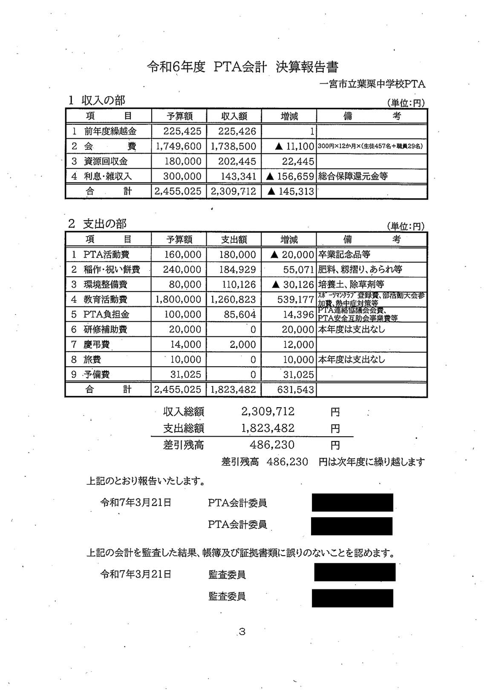
PTA会計／監査委員（2名）
繰越金の1円の不一致。
決算の連続性の誤り。
問題点
- R5末の差引残高は225,425円、R6の「前年度繰越金」の収入額は225,426円で、1円合わない（R6の予算額は225,425円）。
- 金額は小さいが、前年度の決算と翌年度の繰越が一致しないことは、通帳と帳簿の照合が行われていないことを示す。監査委員2名は「帳簿及び証拠書類に誤りのないことを認めます」としている。
法令・規約への該当性
- 疑い：中当該PTAの規約 監査の実効性。
請求・確認すべき資料
- PTAへの請求：R5年度末・R6年度当初の通帳残高
重要度CNo.45⑤ 計数誤り・決算表示の不備
大和中R5・R6年度決算
表題が「決算経過報告」で、監査日はR6.3.12／R7.3.11（年度末の約3週間前）。繰越金を「予備費」として支出に計上し、残額を0円と表示している。R5の繰越金1,096,107円は会費767,400円の143%。


PTA会計（会計2名のうち1名は教職員）／校長（経理事務の受任者）／会計監査委員（2名）
年度途中の「決算経過報告」を決算として承認させている。
確定決算の欠如、繰越金の支出計上。
問題点
- 表題は「PTA会費決算経過報告」で、監査日はR6.3.12、R7.3.11。年度末（3月31日）の約3週間前の数字で、確定した決算ではない。
- 大和中PTA会則第4条は会計年度を4月1日〜3月31日と定める。3月12日以降の収支が決算に反映されていない。
- 繰越金を収入では「予備費（繰越金）」、支出では「予備費（繰り越し）」として計上し、残額を0円と表示している。R5の繰越は1,096,107円で、会費767,400円の143%。会費の1年分を超える資金を抱えている。
- 大和中会則は「帳簿は随時閲覧に供する」と定めており、会員は帳簿の閲覧を求めることができる。
- 令和7年度の業務委任契約により、校長がPTAから「会費の集金及び督促」「印鑑、出納簿及び預貯金通帳等の保管・管理」「経理事務」を無報酬で受任している。
法令・規約への該当性
- 疑い：強当該PTAの規約 会則の会計年度と異なる時点で決算を締めている。
請求・確認すべき資料
- PTAへの請求（会則に基づく帳簿閲覧）：3月12日以降の帳簿、年度末の通帳残高
重要度BNo.46② 学校が負担すべき経費の肩代わり
大和中R5・R6年度決算
需用費「式典用折りたたみ椅子」390,000円。款「後援その他活動費」の学校運営費379,520円（「ボランティア必要品・鉢花・行事用椅子等」）。R6の款「学校支援費」の教育活動補助453,817円（予算の130%）は「合唱祭ライブ配信・探検工事講師・地域お礼等」。
PTA／校長（経理事務の受任者）／一宮市
PTA会費による学校の備品・行事・教育活動費の負担。
学校の経費のPTA負担。
問題点
- 需用費（R5：390,000円）の摘要は「式典用折りたたみ椅子」。入学式・卒業式で使う椅子は学校の備品で、市が整備すべきものである。
- 款「後援その他活動費」の学校運営費（R5：379,520円）は「ボランティア必要品・鉢花・行事用椅子等」。
- R6の款「学校支援費」の教育活動補助453,817円（予算350,000円の130%）は「合唱祭ライブ配信・探検工事講師・地域お礼等」。合唱祭は学校行事、総合的な学習の講師謝礼・地域への謝礼は学校の教育活動費である。
- 大和中会則は、学校の管理運営に直接関与しない旨を定める一方、会費で学校の管理運営経費を負担している。
- 令和7年度の業務委任契約により、校長がPTAから「会費の集金及び督促」「印鑑、出納簿及び預貯金通帳等の保管・管理」「経理事務」を無報酬で受任している。
法令・規約への該当性
- 疑い：強学校教育法5条 学校の経費は、法令に特別の定めがある場合を除き、設置者（一宮市）が負担する。
- 参考文部科学省 平成24年5月9日 初等中等教育局長通知 学校の管理運営経費は設置者が負担すべきもの。学校の会計は学校関係団体の会計と明確に区分して処理する。
請求・確認すべき資料
- 一宮市への開示請求：式典用椅子の寄附受納・財産登録の記録
- PTAへの請求：教育活動補助の明細
重要度BNo.47③ 協力費・寄附金の集め方
中島小R5・R6年度決算
収入科目が「一般会計PTA会費協力金」「教職員PTA会費協力費」で、会費か協力金か性質がはっきりしない。集金文書はPTA会長と校長の連名で、協力費の口数を担任に提出させている（兄弟姉妹は子どもごとに提出）。学校後援費のうち行事費283,893円／264,886円には摘要がない。


PTA／校長（集金・督促・経理の受任者、集金文書の連名者）／担任（申込書の回収者）／一宮市
会費と協力金の区別があいまいな収入と、校長名義を含む集金。
学校が関与する協力金の徴収と、学校行事費のPTA負担。
問題点
- 収入科目は「一般会計PTA会費協力金」「教職員PTA会費協力費」で、会費なのか任意の協力金なのか、名称から判断できない。
- R7年度の集金文書は、PTA会長と校長の連名で発出されている。協力費は口数を記入して担任に提出させ、兄弟姉妹がいる場合は子どもごとに提出させている。
- 業務委任契約で校長が「会費の集金及び督促」を受任している。保護者から見れば、校長が名を連ねて集め、担任が回収し、校長が督促する金であり、学校の徴収と区別できない。
- 款「学校後援費」の行事費（R5：283,893円、R6：264,886円）に摘要がない。何の行事に使ったか分からない。
- 予算総額がR5：1,200,000円、R6：1,000,000円とちょうどの額で、雑収入の予算（R5：594円）で端数を調整している。
法令・規約への該当性
- 疑い：強地方財政法4条の5 市は住民に対し、直接・間接を問わず寄附金を割り当てて強制的に徴収（これに相当する行為を含む）してはならない。校長が集金文書の発出者に加わり、担任が口数申込書を回収している。
- 疑い：中〜強地方公務員法35条 担任・校長が協力金の申込書回収・集金・督促を行っている。
- 疑い：中学校教育法5条 行事費の内容次第。
想定される反論と評価
「校長は文書の内容を承知した趣旨で連名にしただけ」との説明が想定される。連名である以上、保護者は学校の依頼と受け止める。
請求・確認すべき資料
- 市教委への照会：校長がPTAの集金文書に連名する根拠、担任による申込書回収の職務上の位置付け
- PTAへの請求：行事費の明細
重要度CNo.48④ 学校の会計・個人負担金との混在
中島小R5・R6年度決算
同窓会会計をPTAの会計監査委員が監査し、PTA総会の資料に載せている。

PTA会計監査委員／同窓会（別団体）
PTAの監査委員による別団体の会計の監査。
別団体の会計の混在。
問題点
- 同窓会会計（入会金400円×卒業生数、卒業記念品500円×卒業生数）を、PTAの会計監査委員が「一宮市立中島小学校PTA 会計監査委員」として監査し、PTA総会の資料に載せている。
- 同窓会はPTAとは別の団体であり、PTAの監査委員が監査する根拠はない。同窓会の入会金を卒業生全員から集めているのであれば、誰がどのように集めているのかも確認が必要。
法令・規約への該当性
- 疑い：中当該PTAの規約 PTA規約に同窓会会計を扱う定めがあるか不明。
請求・確認すべき資料
- PTAへの請求：同窓会会計の管理者・入会金の徴収方法
重要度CNo.49⑥ 監査・内部統制
（複数校）R5・R6年度決算
監査日が年度末（3月31日）より前の学校が多い：大和中3/12・3/11、中島小3/18、浅野小3/21・3/19、丹陽南小3/19・3/24、貴船小3/21・3/25、北方小3/16（R6）、葉栗中3/21、北部中3/22・3/24、富士小3/24、浅井中小3/25・3/27、小信中島小3/25・3/26、今伊勢小3/25、萩原小3/26・3/27、宮西小3/27・3/28。
該当する画像はありません（開示文書に含まれていない、又は複数校にわたる指摘）。
各校のPTA会計監査（多くの学校で校長がPTA会計・通帳を管理）
会計年度の終了前に行われた監査。
確定前の数字の監査。
問題点
- 15校で、監査日が会計年度末（3月31日）より前：大和中3/12・3/11、中島小3/18、浅野小3/21・3/19、丹陽南小3/19・3/24、貴船小3/21・3/25、北方小3/16（R6）、葉栗中3/21、北部中3/22・3/24、富士小3/24、浅井中小3/25・3/27、小信中島小3/25・3/26、今伊勢小3/25、萩原小3/26・3/27、宮西小3/27・3/28。
- 監査後から年度末までの収支（3月下旬の支払い・預金利息・返金等）は、監査を受けずに決算に入るか、決算から漏れる。
- 萩原小規約は「年度末に監査を受け」、今伊勢小・大和中・浅井中小などは会計年度を3月31日までと定めている。
- 多くの学校で校長がPTAの経理事務・通帳管理を受任しており、3月の人事異動前に監査を済ませる学校側の事情が監査日程を決めている可能性がある。
法令・規約への該当性
- 疑い：中当該PTAの規約 各校規約の会計年度・監査規定。
請求・確認すべき資料
- 各PTAへの請求：監査日以降年度末までの通帳の動き
重要度ANo.50⑧ 校長によるPTA会計の受任
（17校）R7年度開示資料
決算書が開示された21校のうち17校で、PTA会長と校長が業務委任契約を結び、校長が会費の集金・督促（又は徴収事務）、印鑑・出納簿・預貯金通帳の保管、経理事務（9校）を無報酬で受任している。PTA資金の管理者と、その資金で経費を賄われる学校の長が同一人物になっている。

PTA会長（委任者）／校長（受任者）／一宮市教育委員会（任命権者・服務監督者）
私的団体であるPTAと、公務員である校長との無報酬の業務委任契約。
校長がPTAの会費徴収・通帳印鑑の保管・経理事務を職務として引き受けている。
問題点
- 決算書が開示された21校のうち、令和7年度の業務委任契約書が開示されているのは17校。そのうち9校（萩原小・中島小・南部中・今伊勢小・宮西小・大和西小・浅井中小・小信中島小・大和中）は、校長が「会費の集金及び督促」「印鑑、出納簿及び預貯金通帳等の保管・管理」「経理事務」を受任する同一の様式。残る8校（奥小・貴船小・丹陽西小・丹陽南小・富士小・開明小・木曽川西小・葉栗中）は「PTA会費の徴収事務」「印鑑、出納簿及び預金通帳の保管」「広報誌等の配付」「提出物の回収・保管」等を受任する様式（丹陽南小は「経理事務一般」を含む）。
- 受任者の住所は学校の所在地、受任者は「校長」と職名で表示されている。校長個人ではなく、学校の職務として引き受けていると読める。
- 校長はPTAの金を集め、通帳と印鑑を持ち、経理をし、同時にPTA資金の最大の受益者である学校の長である。今回の決算書で見た「学校後援費」「学校運営費」「環境整備費」等の支出は、資金の管理者と受益者が同じ構造の中で行われている。
- 9校の様式の第4条は、校長が保管・管理する書類等を「他人に閲覧させ…てはならない（甲の承諾を得たときを除く）」とする。PTA会員が帳簿を確認する道が、会長の承諾にかかっている。
- 同じ様式が多数の学校で使われていることから、市教委又は市PTA連絡協議会が様式を示している可能性がある。
法令・規約への該当性
- 疑い：強地方公務員法35条 職員は勤務時間及び職務上の注意力のすべてを職責遂行に用い、市がなすべき職務にのみ従事しなければならない。PTAの会費徴収・督促・経理は「市がなすべき責を有する職務」ではない。条例による職務専念義務の免除の手続がとられているかが問題になる。
- 疑い：強地方自治法235条の4第2項 市の所有に属しない現金・有価証券は、法律又は政令の規定によらなければ保管できない。校長が職務としてPTAの現金・預金通帳を学校で保管していれば、法令上の根拠のない保管にあたるおそれがある。
- 疑い：中地方財政法4条の5 校長が督促まで行う会費・協力費を学校経費に充てていれば、間接的な割当て徴収に近づく。
- 疑い：強文部科学省 平成24年5月9日 初等中等教育局長通知 学校の会計とPTAの会計の明確な区分を求めている。校長がPTAの経理事務を行うことは、区分と逆の運用である。
想定される反論と評価
「校長は私人として無報酬で引き受けている」との反論が想定される。しかし契約書は職名「校長」と学校の住所で締結され、事務は勤務時間中に学校内で行われていると見られる。私人としての受任であれば、勤務時間外に学校外で行う必要がある。
請求・確認すべき資料
- 市教委への照会：業務委任契約の様式の作成者、校長が受任することの服務上の根拠（職務専念義務免除の有無）、PTA通帳の保管場所
- 一宮市への開示請求：全市立小中学校の業務委任契約の締結状況、様式を示した通知等
- 一宮市監査委員への住民監査請求（地方自治法242条）：市の職員がPTA事務に従事したことによる給与相当額等の損害、又は財産管理を怠る事実として構成できるか検討
決算書が確認できなかった29校
次の29校は、今回の50校の確認範囲で決算書を検出できなかった。これは一宮市全61校のうち決算書が不存在であるとの判断を意味しない。浅井北小・黒田小・浅井中は予算書のみが含まれていた。大志小は入学ガイドに「4月のPTA総会で前年度の会計報告をする」と記載があるが、決算書は含まれていなかった。いずれもOCRで検出できなかったという意味であり、決算書が存在しないことを確認したものではない。
- 神山小
- 大志小
- 向山小
- 葉栗小
- 西成小
- 丹陽小
- 浅井北小
- 大和東小
- 千秋小
- 千秋南小
- 末広小
- 西成東小
- 今伊勢西小
- 葉栗北小
- 大和南小
- 千秋東小
- 起小
- 三条小
- 朝日東小
- 朝日西小
- 大徳小
- 黒田小
- 木曽川東小
- 中部中
- 西成中
- 丹陽中
- 浅井中
- 北方中
- 今伊勢中
根拠法令・参考資料
学校教育法5条
学校の設置者は、その設置する学校を管理し、法令に特別の定のある場合を除いては、その学校の経費を負担する。
https://www.kyoto-u.ac.jp/uni_int/kitei/reiki_honbun/w002RG00000944.html
地方公務員法35条（職務に専念する義務）
職員は、法律又は条例に特別の定がある場合を除く外、その勤務時間及び職務上の注意力のすべてをその職責遂行のために用い、当該地方公共団体がなすべき責を有する職務にのみ従事しなければならない。
地方財政法4条の5（割当的寄附金等の禁止）
国（中略）は地方公共団体又はその住民に対し、地方公共団体は他の地方公共団体又は住民に対し、直接であると間接であるとを問わず、寄附金（これに相当する物品等を含む。）を割り当てて強制的に徴収（これに相当する行為を含む。）するようなことをしてはならない。
https://laws.e-gov.go.jp/law/323AC0000000109
地方財政法27条の4（市町村が住民にその負担を転嫁してはならない経費）
市町村は、法令の規定に基づき当該市町村の負担に属するものとされている経費で政令で定めるものについて、住民に対し、直接であると間接であるとを問わず、その負担を転嫁してはならない。
https://laws.e-gov.go.jp/law/323AC0000000109
地方財政法施行令52条
法第二十七条の四に規定する経費で政令で定めるものは、次に掲げるものとする。一 市町村の職員の給与に要する経費 二 市町村立の小学校、中学校及び義務教育学校の建物の維持及び修繕に要する経費
https://laws.e-gov.go.jp/api/1/lawdata/323CO0000000267
地方自治法235条の4第2項
債権の担保として徴するもののほか、普通地方公共団体の所有に属しない現金又は有価証券は、法律又は政令の規定によるのでなければ、これを保管することができない。
https://www.city.kitakyushu.lg.jp/files/001225586.pdf
文部科学省初等中等教育局長通知（平成24年5月9日）「学校関係団体が実施する事業に係る兼職兼業等の取扱い及び学校における会計処理の適正化についての留意事項等について」
「学校の管理運営に係る経費については、当該学校の設置者である地方公共団体が負担すべきもの」「学校関係団体から学校に対して自発的な寄附（金銭・物件）を行うことは禁止されておらず」「学校における会計について、学校関係団体の会計と明確に区分して処理する」（いずれも抜粋）
https://www.mext.go.jp/content/20221011-mxt_syoto01_02.pdf
参考：名古屋市「PTAから学校（園）への物品等の寄附にかかる基本的な考え方」
地方財政法4条の5・27条の4、施行令52条を根拠に、学校が寄附を働きかけないこと、建物の維持・修繕に関わる寄附を制限すること、消耗品・修繕・備品・図書は公費で整備するものであること、受入れ手続を要することを示している（隣接する政令市の運用例。一宮市の基準ではない）。
参考：一宮市教育振興基金
市立小中学校の教育活動・教育環境の充実のための寄附を受け入れる基金（個人1万円以上、法人・団体10万円以上。使途の希望を出せる）。PTAが学校に資金を出す場合の正規の経路。
本稿は、2026年11月8日までに当委員会が確認した一宮市の開示文書と公表資料に基づく分析である。一宮市及び各学校・各PTAの違法を最終的に認定するものではなく、市と各学校に対し、PTA資金と学校経費の関係、及び校長によるPTA事務の受任について、具体的な確認と説明を求めるものである。